Trend Lines and Channels趋势线与通道 · 第 II 部分 · 原版英文全文。正文可划线/批注/记进度;图为原书 K 线图。
Trend Lines
A bull trend line is a line drawn across the lows of a bull trend, and a bear trend line is drawn across the highs of a bear trend. A trend line is most helpful when looking for entries in the direction of the trend on pullbacks and in the opposite direction after the trend line is broken. Trend lines can be drawn using swing points or best fit techniques such as linear regression calculations or simply quickly drawing a best approximation. They also can be created as a parallel of a trend channel line and then dragged to the trend line side of the bars, but this approach is rarely needed since there is usually an acceptable trend line that can be drawn using the swing points. Sometimes the best fit trend line is drawn just using the candle bodies and ignoring the tails; this is common in wedge patterns, which often do not have a wedge shape. It is not necessary to actually draw the line when it is obvious. If you do draw a line, you usually can erase it moments after you verify that the market has tested it, because too many lines on the chart can be a distraction.
Once a trend has been established by a series of trending highs and lows, the most profitable trades are in the direction of the trend line until the trend line is broken. Every time the market pulls back to the area around the trend line, even if it undershoots or overshoots the trend line, look for a reversal off of the trend line and then enter in the direction of the trend. Even after a trend line breaks, if it has been in effect for dozens of bars, the chances are high that the trend extreme will get tested after a pullback. The test can be followed by the trend continuing, the trend reversing, or the market entering a trading range. The single most important point about a trend line break is that it is the first sign that the market is no longer being controlled by just one side (buyers or sellers) and the chances of further two-sided trading are now much greater. After every trend line break, there will be a new swing point on which to base a new line. Typically, each successive line has a flatter slope, indicating that the trend is losing momentum. At some point, trend lines in the opposite direction will become more important as control of the market switches from the bears to the bulls or vice versa.
If the market repeatedly tests a trend line many times in a relatively small number of bars and the market cannot drift far from that trend line, then either of two things will likely happen. Most of the time, the market will break through the trend line and attempt to reverse the trend. However, sometimes the market does the opposite and moves quickly away from the trend line as traders give up trying to break through it. The trend then accelerates rather than reverses.
The strength of the trend line break provides an indication of the strength of the countertrend traders. The bigger and faster the countertrend move, the more likely that a reversal will occur, but there will usually first be a test the trend’s extreme (for example, in the form of a lower high or a higher high in the test of the high of the bull trend).
It is helpful to consider a gap opening and any large trend bar to be effectively breakouts and each should be treated as if it is a one-bar trend, since breakouts commonly fail and you need to be prepared to fade them if there is a setup. Any sideways movement over the next few bars will break the trend. Usually, those bars will be setting up a flag and then be followed by a with-trend move out of the flag, but sometimes the breakout will fail and the market will reverse. Since the sideways bars broke the steep trend line, you can look to fade the trend if there is a good signal bar for the reversal.
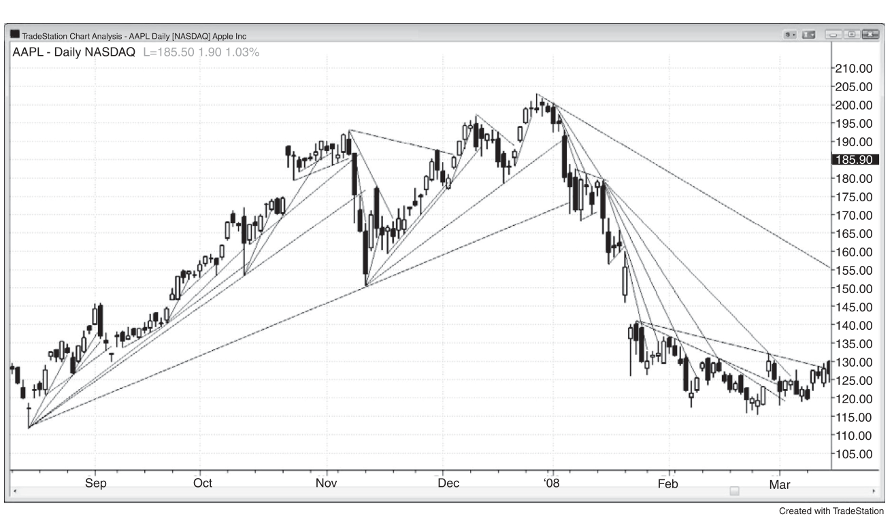
Which trend lines were valid? Every one of them that you can see has the potential to generate a trade. Look for every swing point that you can find and see if there is an earlier one that can be connected with a trend line, and then extend the line to the right and see how price responds when it penetrates or touches the line. Notice how each successive trend line tends to become flatter until some point when trend lines in the opposite direction become more important.
In actual practice, when you see a possible trend line and you are not certain how far it is from the current bar, draw it to see if the market has hit it and then quickly erase the line. You don’t want lines on your chart for more than a few seconds when trading, because you don’t want distractions. You need to focus on the bars and see how they behave once near the line, and not focus on the line.
As a trend progresses, countertrend moves break the trend lines and usually the breakouts fail, setting up with trend entries. Each breakout failure becomes the second point for the creation of a new, longer trend line with a shallower slope. Eventually a failed breakout fails to reach a new trend extreme. This creates a pullback in what may become a new trend in the opposite direction, and this allows for the drawing of a trend line in the opposite direction. After the major trend line is broken, the trend lines in the opposite direction become more important, and at that point the trend has likely reversed.
Figure 13.1 illustrates one of the most important points that everyone needs to accept as reality if they are to become successful traders—most breakouts fail! The market repeatedly races toward a trend line with very strong momentum, and it is easy to get caught up in the strength of the bar and overlook what just took place over the past 20 bars. For example, when the market is trending up, it has many very strong sell-offs that quickly drop to the bull trend line. This makes beginners assume that the market has reversed and they sell just above, at, or below the trend line, believing that with so much downward momentum, they will ride that wave to a big profit and be entering the new bear trend near the very beginning. At the very worst, the market might bounce a little before having at least a second leg down that would allow them to get out at breakeven. When they are making their decision to trade against the trend with the hope that a new trend is starting, all they are considering is the reward that they stand to gain. However, they are ignoring two other essential considerations for every trade: the risk and the probability of success. All three must be evaluated before placing a trade.
While beginners are shorting on those strong sell-offs near the bull trend line, experienced traders are doing the opposite. They have limit orders to buy at and just below the trend line, or they will buy there with market orders. The market usually has to go at least a little below the trend line during a sharp sell-off to find information. It needs to know if there will be more sellers or more buyers. Most of the time, there will be more buyers and the bull trend will resume, but only after there has been a big break below the trend line and then another rally that tests the old bull high by forming either a higher high as it did here, or a lower high.
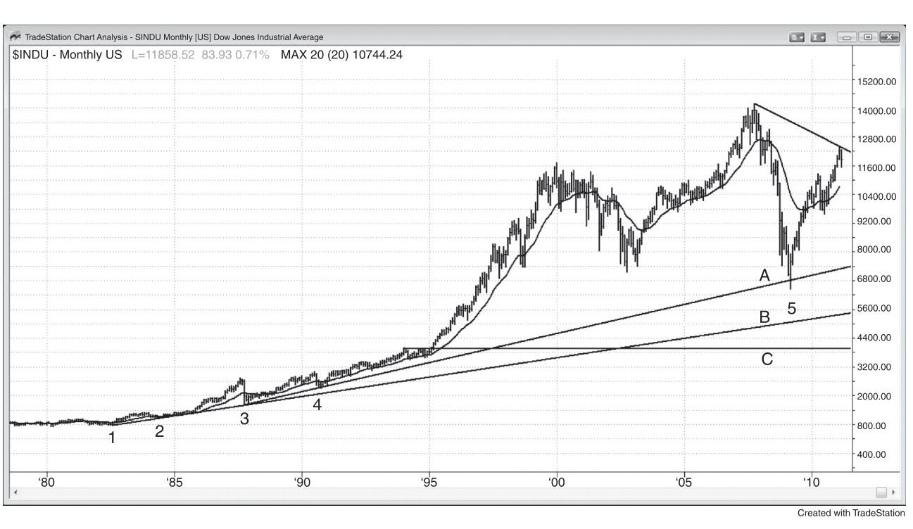
Trend lines are important on all time frames, including the monthly chart of the Dow Jones Industrial Average (INDU). Note in Figure 13.2 how the 1987 crash at bar 3 ended on a test of trend line B drawn from bars 1 and 2. The 2009 bear market reversed up from trend line A, drawn from the 1987 crash and the 1990 low, but since the 2009 bear trend was so strong, there is a reasonable chance that the market will again test line B. It is unlikely that the market will come all the way back to the line C breakout, which coincided with the Republican takeover of the House and Senate in 1994. Normally, when a breakout is followed by a protracted trend, it is unlikely to be touched again, but it usually gets tested. Since we never adequately tested it, it may remain as somewhat of a magnet, drawing the market down. However, it was many bars earlier and likely has lost some or all of its magnetic pull.
Incidentally, the market’s direction is usually only about 50 percent certain because the bulls and bears are in balance most of the time. However, when there is a strong trend, traders can often be 60 percent or more certain of the direction. Since the 2009 crash was so strong, it is probably 60 percent certain that its low will be tested before the all-time high is exceeded. Bears will probably start looking at the current bear rally as a potential right shoulder of a head and shoulders top, a double top with the 2007 high, or an expanding triangle top (if the market reaches a new all-time high). Price action traders see each of these as simply a test of the top of the 12-year-long trading range.
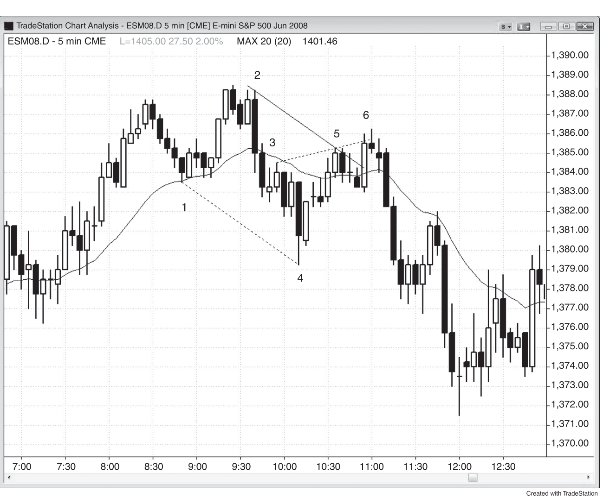
A trend line can be drawn using a parallel of a trend channel line, but this rarely provides trades that are not already apparent using other more common price action analysis.
In Figure 13.3, a bear trend channel line from bars 1 to 4 was used to create a parallel, and the parallel was dragged to the opposite side of the price and anchored at the bar 2 high (because this then contained all of the prices between the bars 1 and 4 beginning and end of the trend channel line).
Bar 6 was a second attempt to reverse the break above that line and therefore a good short setup.
The trend line created as a parallel to the bar 1 to bar 4 trend channel line was almost indistinguishable from the trend line created from the highs of bar 2 and bar 5 (not shown) and so added nothing to a trader looking for a short. It is shown only for completeness.
Deeper Discussion of This Chart
Bar 6 in Figure 13.3 was also a failed overshoot of the bars 3 and 5 trend channel line, making the bar 6 short an example of a dueling lines trade. This is where a trend channel line in a pullback or a leg of a channel intersects the channel’s trend line. Here, the pullback to the trend line was in the form of a wedge bear flag created by bars 3, 5, and 6.
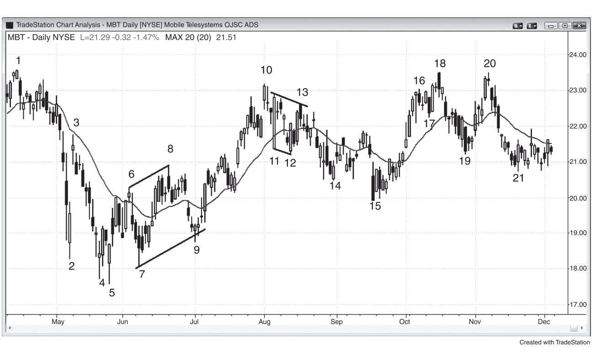
After the first couple of pushes, sometimes the trend channel line that they generate can be used to create a channel. Figure 13.4 is the daily chart of the Russian communications company Mobile Telesystems (MBT).
The push up to bar 6 was strong and there was a second strong move up to bar 8. After the wedge bottom at bar 4, the market might have been developing a trend reversal and a bull channel. Traders could have used the trend channel line from bar 6 to bar 8 to create a parallel, and then they could have dragged it to the bar 7 swing low in between them to create a channel. Traders then watched the sell-off from bar 8 to see if it was followed by a reversal up at the bottom of the channel. The bar 9 bull reversal bar was the buy setup.
Similarly, bar 10 was in the area of the bar 1 high, so traders were aware of a possible double top. The market gapped down on bar 11 and had a second leg down to the bar 12 low. Traders could have drawn a trend channel line across their lows and then they could have dragged it to the high in between them, which happened to be the top of bar 11. They would then wait for a rally off the bar 12 low to see if it found resistance at the top of this potential new bear channel. When they saw the strong bear reversal bar at bar 13, they could have shorted, expecting that the market might have been in the process of channeling down.
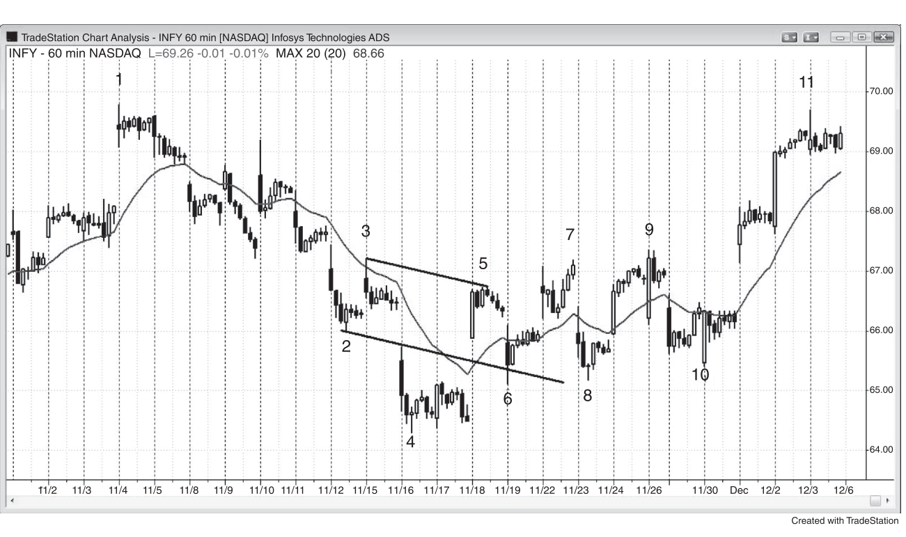
As shown in Figure 13.5, when a possible head and shoulders pattern is setting up (the area around bar 4 is the head), a trend channel line drawn across the neckline (bars 3 and 5) and dragged to the left shoulder (bar 2) sometimes gives an approximation of where the right shoulder might form (bar 6). When the market falls to that level, traders will begin to look for buy setups, like the strong bull inside bar that followed the bar 6 sell climax. This is of minor importance since the most recent bars are always much more important in deciding where to enter. This is the 60 minute chart of Infosys Technologies (INFY), one of the leading software companies in India.
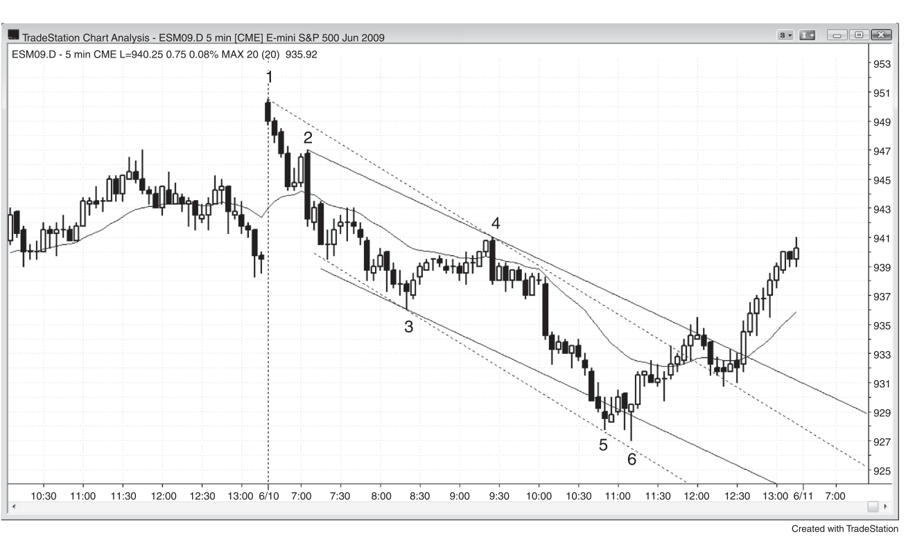
In Figure 13.6, the dotted trend channel line that runs from the bar 3 low to just below the bar 5 low was created as a parallel of the dotted bear trend line drawn across the highs of bars 1 and 4. Although neither bar 5 nor bar 6 touched it, they were close enough and many bulls would have been satisfied that the bottom of the channel was adequately tested and therefore the market could be bought. However, many traders prefer to see a penetration of the channel before looking for a reversal up that should penetrate the top of the channel as a minimum target.
When a trend channel line is so steep that it is tested but not broken, it is wise to look for other possible ways to draw the line. Maybe the market is seeing something that you have not yet seen. Since the bear trend began in earnest with the bar 2 large bear trend bar, it is reasonable to consider that as a starting point for a trend line. If you draw a trend line from bars 1 to 4 and then create a parallel and drag it to the bar 3 low, you would discover that bar 6 was the second reversal up from an overshoot of the bottom of that channel (bar 5 was the first). The market, as expected, rallied and broke above the top of the channel. It then pulled back and ran even further up.
Deeper Discussion of This Chart
Today broke above yesterday’s high with a gap up in Figure 13.6, and the breakout failed.
The market trended down for four bars, creating a trend from the open bear trend. Bar 2 was the first pullback, and that is usually a reliable entry into the bear trend. It was a breakout to the downside and therefore a spike down and was followed by a bear channel that ended with three pushes down to bar 3. Since a spike and channel pattern is a type of climax, the reversal usually has two legs up and the rally usually tests the top of the channel where it often sets up a double top bear flag short, as it did here.
Bar 4 was another spike down, and there was an even larger bear spike eight bars later. It was followed by a bear channel, and the top of that channel was tested by a bull spike and channel that ended just after 12:00 p.m. PST. There was then a four-bar sell-offthat tested near the bottom of that bull channel, setting up a double bottom bull flag, and it was followed by a strong rally that tested the bar 4 high. This was a potential double top bear flag setup going into the next day.
The average daily range was about 20 points, so once the market got down to about
20 points below the open, this gave traders another reason to look for a bounce.
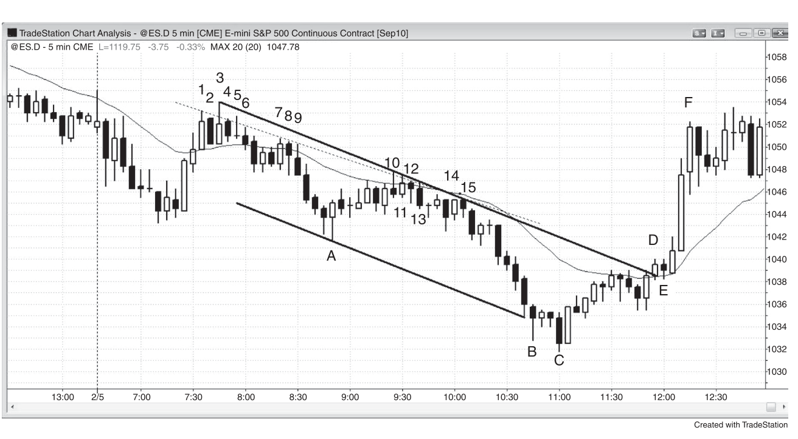
As shown in Figure 13.7, the dotted bear trend line was repeatedly tested about 15 times and eventually the bulls gave up. The trend line was a best fit line across the highs to illustrate all the tests of the resistance line. The bulls finally stopped trying. They sold out of their longs, adding to the selling pressure, and stopped looking to buy again until the market fell for many more bars. The market was therefore very one-sided and the bears were able to accelerate the trend downward. Usually when the market repeatedly tests a trend line and is unable to fall from it, it breaks above it. Other times, like here, it accelerates downward and ends in a climax around the bottom of a channel. The trend line drawn across the highs of bars 3 and 15 contained all of the highs and therefore was a reasonable choice for the top of the channel. A parallel was anchored to the bar A low, and both bars B and C broke through the bottom of the channel and reversed up. Once the reversal was confirmed by the two-bar reversal at bar C and the bar after, the first objective of the rally was a test above the top of the channel. There was a breakout on bar D, then a one-bar pause, which is a type of pullback. Instead of finding resistance and sellers at the bear trend line, the market found strong buying and had a strong bull breakout above the bear channel.
Deeper Discussion of This Chart
Today tested the moving average in Figure 13.7, and then broke out below yesterday’s swing low. Traders could short below the first bar, since it was a low 2 short (it was a small two-legged pullback to the EMA) or below the fourth bar of the day. However, the second, third, and fourth bars were large and almost entirely overlapping, and this is a sign of uncertainty, one of the hallmarks of a trading range. This makes shorting below that fourth bar more likely to be followed by a breakout that would not go far before getting pulled back by the magnetic force of that tight trading range.
The market remained in a trading range for several hours and then broke down to a new low of the day. The two-sided forces continued to control the market and the market reversed up into the close, ending the day about where it began.
Trend Channel Lines
I n a bull or bear channel, the trend channel line is on the opposite side of the price action from the trend line and has the same general slope. In a bull trend, a trend line is below the lows and a trend channel line is above the highs, and both are rising up and to the right. A trend channel line is a useful tool for fading a trend that has gone too far, too fast. Look for an overshoot that reverses, especially if it is the second penetration that is reversing.
A trend channel can have roughly parallel lines, or the lines can be convergent or divergent. When they converge and the channel is rising or falling, the channel is a wedge and this often sets up a reversal trade. In general, any channel that is sloping up to the right can be thought of as a bear flag and it is likely that there will be a breakout through the bottom of the channel. The breakout can lead to a trend reversal or to a trading range that can break out to the upside or the downside. Sometimes the market will accelerate to the upside and break out of the top of the channel. When this happens, it is usually a climactic rally that leads to a reversal back into and often through the bottom of the channel, but sometimes it can be the start of another leg up in an even stronger bull trend.
Similarly, a channel that slopes down to the right can be thought of as a bull flag and the market will likely break out of the channel to the upside. This can be the start of a trend reversal or a trading range. If the market falls through the bottom of a falling channel, the breakout will usually fail within about five bars and lead to a reversal, but it can also be the start of a new, stronger bear leg.
A trend channel line can be created as a parallel of a trend line that is then dragged to the opposite side of the price action. It can also be drawn across spikes on the opposite side of the channel, or it can be drawn as a best fit line, like a linear regression line or by simply visually drawing a best fit line. In a bull trend, a trend line is drawn across two lows. If that trend line is used to create a parallel that will be used for a trend channel line, drag the parallel line to the opposite side of the trend. You want it to contain (be above) the highs of all of the bars located in between the two bars used to create the trend line, so drag it to the high of whatever bar will leave it touching that bar alone. Occasionally you will get a better sense of the trend if you anchor the line to a bar that is outside of the two bars. Always do whatever best highlights the trend.
Sometimes there will be a single spike up within an otherwise fairly tight channel, and when that is the case, it is usually best to ignore it and use the other bars for the location of the trend channel line. However, be aware of the possibility that the market might ultimately decide that the channel line should instead be across that spike up. If the market begins to have wider swings and they all are stopping at the top of the channel that uses that one spike as the anchor for the trend channel line, then you should use that wider channel.
A trend channel line can also be created on its own, rather than as a parallel of the trend line. In a bear swing, a trend line will be downward sloping and above the highs. The trend channel line will have a similar slope, but draw it between any two swing lows in the bear swing. It is most useful if it contains (is below) all of the other bars in the swing, so choose the bars that will give that result.
Trend channel line overshoots are closely related to wedges and should be viewed and traded as if they are one and the same. Most wedges have failed trend channel line breakouts as the trigger for a reversal trade, and most trend channel line overshoots and reversals are also wedge reversals, although the wedge may not be obvious or have a perfect wedge shape. The wedges are less obvious and less likely to be present when the trend channel line is constructed as a parallel of a trend line, but wedges are still often present.
When a channel has a wedge shape, it is due to urgency. For example, in a wedge top, the slope of the trend line is greater than the slope of the trend channel line. The trend line is where the with-trend traders enter and the countertrend traders exit, and the opposite happens at the trend channel line. So if the slope of the trend line is greater, that means that the bulls are buying on smaller pullbacks and the bears are exiting on smaller sell-offs. What first distinguishes a wedge from a channel where the lines are parallel is the second pullback. Once the second push up has begun to reverse down, traders can draw a trend channel line and then use it to create a parallel line. When they drag that parallel line to the bottom of the first pullback, they have created a trend line and a trend channel. That tells bulls and bears where support is, and bulls will look to buy there and bears will look to take profits there. However, if the bulls begin to buy above that level and the bears exit their shorts early, the market will turn back up before it reaches the trend line. Both are doing so because they feel a sense of urgency and are afraid that the market will not drop down to that support level. This means that both feel that the trend line needs to be steeper and that the trend up is stronger.
Once the market turns up, traders can redraw the trend line. Instead of using the parallel of the trend channel line, they now can draw a trend line using the bottoms of the first two pullbacks. They now see that it is steeper than the trend channel line above and they begin to believe that the market is forming a wedge, which they know is often a reversal pattern. Traders will draw a parallel of that new steeper trend line and drag it to the top of the second push up, in case the market is forming a steeper parallel channel instead of a wedge. Both the bulls and the bears will watch to see whether the original trend channel line will contain the rally or the new, steeper one will be reached. If the original one contains the rally and the market turns down, traders will think that although there was more urgency in the buying on the second pullback, that urgency did not continue on the third push up. The bulls took profits at the original, shallower trend channel line, which means that they exited earlier than they could have. The bulls were hoping that the market would rally to the steeper trend channel line but now are disappointed. The bears were so eager to short that they were afraid that the market would not reach the steeper, higher trend channel line so they began to short at the original line. Now it is the bears who have a sense of urgency and the bulls who are afraid. Traders will see the turn down from the wedge top and most will wait for at least two legs down before they look for the next major pattern to buy or sell.
Once the market makes its first leg down, it will break below the wedge. At some point, the bears will take profits and the bulls will buy again. The bulls want to cause the wedge top to fail. When the market rallies to test the wedge top, the bears will begin to sell again. If the bulls begin to take profits, they believe that they will be unable to push the market above the old high. Once their profit taking, combined with the new selling by the bears, reaches a critical mass, it will overwhelm the remaining buyers and the market will turn down for that second leg. At some point, the bulls will return and the bears will take profits, and both sides will see the twolegged pullback and wonder if the bull trend will resume. At this point, the wedge has played itself out and the market will be looking for the next pattern.
Why do so many reversals occur after a trend channel line overshoot when everyone knows that it commonly leads to a reversal? Won’t early entrants prevent the line from ever being reached? Common wisdom is that novice traders on the wrong side hold their losing positions until they cannot stand any more pain, and then suddenly all of them exit at once, creating a blow-off or a parabolic climax. For example, in a bull channel, the market works its way up to some resistance level, even if it is not very apparent or impressive, and pokes through it, causing the last shorts to no longer be willing to take the pain. They suddenly give up. As soon as these last shorts cover in unison, many euphoric, inexperienced bulls see the upsurge and buy into it, adding to the sudden, sharp move that breaks above the trend channel line. This spike up causes more remaining shorts to cover, and the impressive upsurge causes more na¨ıve bulls to initiate new longs, with the process feeding on itself. But then there are not enough shorts left who will cover and move the market higher, and those euphoric bulls who were trading on emotion rather than logic will panic when the market suddenly stops accelerating up, pauses, and starts to turn down. They suddenly realize that they bought at the high of a possible climax and will be quick to exit. With no more buyers left and with trapped new longs panicking to sell out of their positions, the market suddenly becomes one-sided and dominated by sellers so that it can only go down. That is the conventional logic and it is not important whether it is true. In fact, it is likely not a meaningful component of a reversal in a huge market like the Eminis where institutions dominate and most of the trading is probably computer generated. Smart traders won’t trade countertrend until either there is a pullback from a strong trend line break or there is a reversal from a trend channel line overshoot. For example, in a bull trend, smart money will keep buying until they drive the price above the bull trend channel line and then they will take profits. There may be a couple of failed attempts to reverse, and the market may continue to rally at an accelerated pace, creating steeper trend channel lines. Incidentally, if you find yourself redrawing trend channel lines repeatedly, this is usually a sign that you are on the wrong side of the market. You are looking for a reversal but the trend keeps getting stronger. You should be trading with the trend instead of intensely looking for a reversal.
Eventually the market will agree on which trend channel line is the final one and you will see a convincing reversal. Be patient and trade only with trend until then; never trade against the trend until it has clearly reversed. At the same time as the profit takers are taking profits, many will reverse and many other traders who were already flat will initiate shorts. Other smart traders will wait for a reversal on the charts and there will be traders entering on reversals on all types of charts (1 to 5 minute, and volume charts and tick charts of any size).
Once they believe that the top is in, this smart money won’t be looking to buy any longer. They are short and most of these traders will hold through a new high, despite an open loss on their current position, believing that the top is in or close to in. In fact, many will add on above the high, both to get a better average price for their shorts and to help push the market down. The big players are only thinking short and won’t be scared out except by the rare occurrence of a failed second entry or a huge failure (for example, maybe three points above their entry in the Emini). There are no buyers left, so the market only has one way to go.
Although you do not need to look at volume when deciding whether to place a trade since it is so unreliable, it is often huge at key turning points, especially at bottoms. Every trade is between one or more institutions buying and one or more selling. The major buyers at a market bottom are the profit taking bears and the new longs. Why would a firm ever sell at the bottom tick of a bear market? Every firm uses strategies that they have carefully tested and found to be profitable, but all lose money on 30 to 70 percent of their trades. The firms selling at the low tick are the ones who were selling at the low tick all the way down in the bear, making profits on many of their earlier entries, and they simply continue to use those strategies until it is clear that the trend has reversed. So, yes, they lose on that short at the final low tick of the bear, but make enough from all of their earlier shorts to end up profitable. There are also HFT firms that will scalp for even a single tick right down to the low tick of the bear. Remember, the low is always at a support level, and many HFT firms will short a tick or two above support to try to capture that final tick, if their systems show that this is a profitable strategy. Other institutions sell as part of a hedge in another market (stocks, options, bonds, currencies, etc.) because they perceive that their risk/reward ratio is better if they place the hedge. The volume is not from small individual traders, because they are responsible for less than 5 percent of the volume at major turning points. The reversal at an overshoot happens because it is such an entrenched part of institutional trading psyche that it has to happen. Even if institutions do not look at charts, they will have some other criterion that tells them that the market has gone too far and it is time to exit or reverse, and this will invariably coincide with what price action traders are seeing. Remember, price action is the inescapable footprint of what is happening to price as a huge number of smart people are independently trying to make the most money they can in the market. In a big market, the price action cannot be manipulated and will always be basically the same.
One final minor observation is that the slope of the final flag of a trend often provides an approximation of the slope of the new trend. This has limited value to a trader because there will be other much more important factors involved in the decision leading up to placing a trade, but it is an interesting observation.
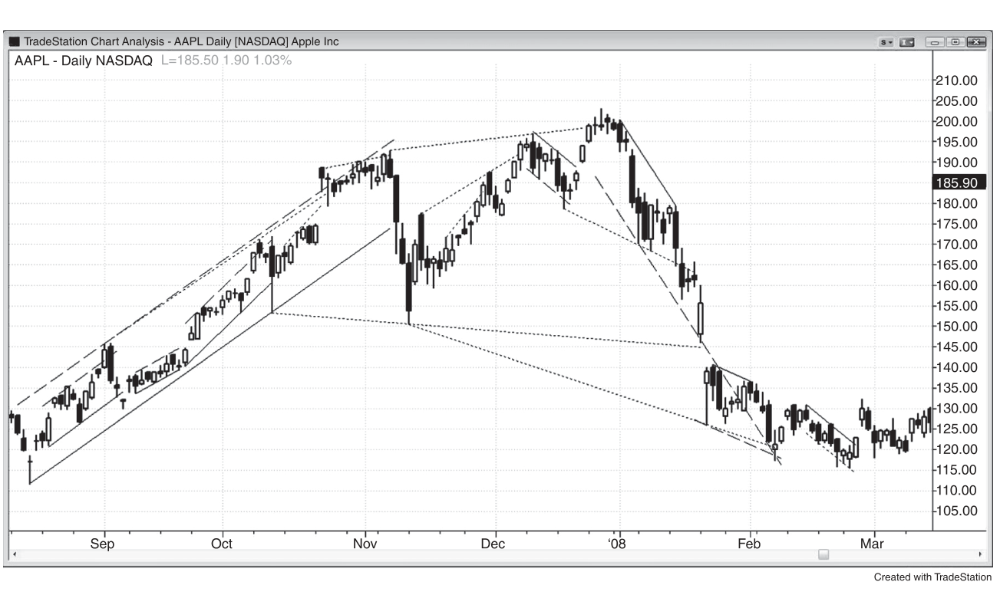
A trend channel line points in the direction of the trend but is on the opposite side of the trend from the trend line. Extend it to the right and watch how the price acts when it penetrates the channel line. Does it reverse or does the trend accelerate, ignoring the line?
Trend channel lines are commonly drawn in one of two ways. The first way is to draw it as a parallel line (dashed lines in Figure 14.1) of a trend line (solid lines), drag it to the opposite side of the action, and place it to touch a swing point located between the two bars used to create the trend line. Choose the point that will result in all of the bars between the trend and channel lines being contained between the lines. The second type (dotted lines in Figure 14.1) of a trend channel line is drawn across swing points and is independent of any trend line. You can also simply draw a best fit, but these are usually not helpful in trading.
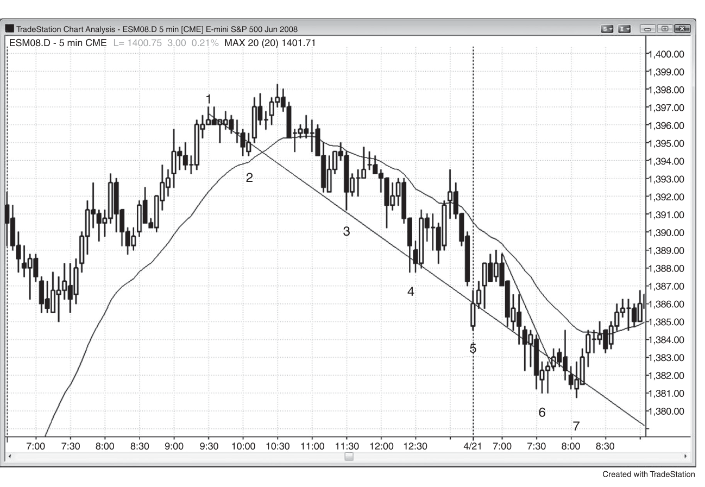
The slope of the final flag of the bull trend provided direction for the subsequent bear trend in Figure 14.2. A linear regression trend line drawn between bars 1 and 2 became a rough bear trend channel line for the sell-off that extended into the next day. It is possible that it contributed to the buying at bar 7, but bar 7 was a buy simply based on the break of the trend line drawn over the first hour of trading, and the second attempt to reverse the breakout below the bar 5 low of the open. It is usually far better to place orders based on the most recent price action if it provides a justification for a trade than to look back 30 or more bars.
In hindsight, the bull trend effectively ended at bar 1, even though the market made a higher high after bar 2. The move down to bar 2 was the first leg down in the bear channel.
Deeper Discussion of This Chart
The market was in a bear channel in Figure 14.2 for the final couple of hours of yesterday, so the odds of a successful first attempt to reverse upward were not great. The breakout below the trend channel line reversed up with the first bar of the day, which was a bull trend bar, but the failed breakout went only a few bars before setting up a breakout pullback short.
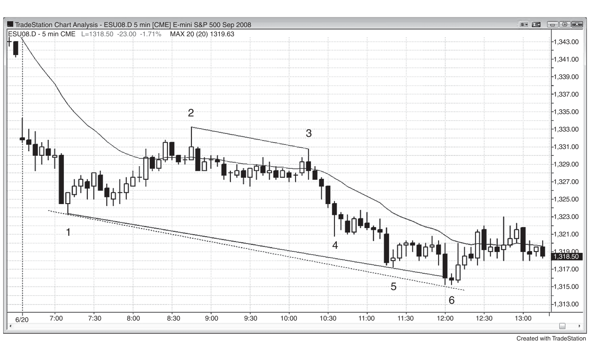
In Figure 14.3, the trend line from bars 2 and 3 was used to create a parallel that was dragged to bar 1 and extended to the right. This trend channel line was not penetrated by bar 6. Also, it was anchored to bar 1, which was not in between bars 2 and 3 (the bars used to create the original trend line). However, traders should always be looking at every possibility. Had there been a penetration and reversal, the chances of a two-legged rally off the bar 5 low would have been improved.
The simple trend channel line created from the bars 1 and 5 lows was penetrated by bar 6, but this was not an ideal trend line to use as a basis for a countertrend trade since bars 1 and 5 were far apart and bars 5 and 6 were close together. Trend lines work best when they are tested by a third leg. Here, bars 5 and 6 were essentially still part of the same leg (three pushes down, bars 4, 5, and 6). The trade was still worth taking because bar 6 was small, so the risk/reward ratio was good. This was also a shrinking stair pattern down (discussed later, but it is a series of lower lows where each successive breakout is smaller than the prior one), which indicated waning bearish momentum and supported a long.
Deeper Discussion of This Chart
The large gap down in Figure 14.3 was a breakout, as all large gaps are, and the day started as a trend from the open bear day. The small opening range put the market in breakout mode, and there was a large bear breakout bar. However, an unusually large bear trend bar forming after a bear trend has gone a long way usually is a sell climax that will be followed by at least a two-legged sideways to up correction that lasts at least
10 bars. Bar 1 was a strong bull reversal bar that set up the failed breakout long. There was a two-legged sideways correction that ended with the bar 3 failed breakout of a tight trading range, and it formed an approximate double top with bar 2. Even though most of the trading was sideways, the day still opened near its high and closed near its low.
This was a trending trading range day with upper and lower trading ranges.
Channels
When trading is mostly confined to between a pair of lines, it is in a channel. The market is always in some kind of channel if you look hard enough to find one, and it usually is simultaneously in several, especially if you look at other time frames. A trend channel is a channel that is diagonal and is contained by a trend line and a trend channel line. For example, a bear channel has a descending trend line above (a bear trend line) and a descending trend channel line below (a bear trend channel line). A trading range is contained between a horizontal support line below and a resistance line above. Sometimes a trading range can be slightly rising or falling, but if so, it is better to think of it as a weak trend channel.
Triangles are also channels, since they are areas of price action contained between two lines. Since they have either higher highs or lower lows, or both in the case of an expanding triangle, they have some trending behavior in addition to their trading range behavior. An expanding triangle is contained between two diverging lines, both of which are technically trend channel lines. The line below is across lower lows, so it is below a bear trend and therefore a trend channel line, and the line above is across higher highs and therefore a bull trend channel line. A contracting triangle is contained between two trend lines, since the market is both in a small bear trend with lower highs and a bull trend with higher lows. An ascending triangle has a resistance line above and a bull trend line below, and a descending triangle has a support line below and a bear trend line above. A wedge is an ascending or descending channel where the trend line and trend channel line converge, and it is a variant of a triangle. An ABC correction in a bull trend is a small bear channel, and when it is in a bear trend it is a small bull channel.
Although the moving average often functions as support or resistance in a strong trend and many traders create curved channels and bands based on the moving average and many other factors, straight trend lines and trend channel lines consistently provide more reliable setups and profitable trades.
A bull channel can be in a trading range, a bull trend, a bear trend, or at a possible bottom of a bear trend as the market begins to reverse up. When it is in a trading range, traders can consider buying when in the lower half of the range, but the odds of success become less as the channel progresses into the upper half of the range. When a channel is in a bull trend, higher prices are more certain, and traders should look to buy near the bottom of the channel. The chance of a successful long remains good until the channel begins to have prominent selling pressure, or until it approaches significant resistance. When a channel is especially tight, meaning that the trend line and trend channel lines are close together and the pullbacks are small, it is a sign that the trend is strong, and it can be a spike on a higher time frame chart. A broader channel may follow, which might reach a measured move target, based on the height of the tight channel. A channel that is so tight that it has no pullbacks or only one or two tiny pullbacks is a micro channel, which is discussed in the next chapter.
When a bull channel forms in a bear trend, it is a bear flag, and traders should look to short near the top, or on the pullback from a downside breakout. Sometimes when a bear trend begins to reverse up, the first five to 10 bars are in a weak bull channel, with lots of overlapping bars and one or more attempts to break below the bear flag, but these fail and quickly reverse up. After a failed low 2 or low 3, the market then sometimes breaks out to the upside from the bear flag, the market suddenly becomes always-in long, and a bull reversal begins. When traders suspect that a bear flag might be the start of a bull trend, many will buy below the low 1, 2, or 3 signal bars, expecting them to fail and for the market to reverse up.
As a channel is forming, traders are uncertain if there will actually be a channel or just a two-legged move and then a reversal. In fact, you usually cannot even draw channel lines until after the market begins to reverse from the two-legged move and the reversal fails, and the third leg begins. For example, if the market just completed two legs up and has started to reverse, many traders will short the reversal if the rally is not a strong bull trend. However, if the leg down ends and is comparable in size to the first leg down (the leg after the first leg up), and then it reverses up again, traders will now begin to assume that a bull channel is underway rather than a reversal down into a bear leg. Once that second leg ends, traders will draw a trend line from the bottom of the first leg down to the bottom of this second leg and extend it to the right. They will look to buy whenever the market again comes back to the trend line. They will also create a parallel of the line and drag it to the top of the first leg up, and this is their first creation of a channel. Whenever the market rallies up to that trend channel line, traders will take profit on their longs, and look to short. Since a bull channel needs at least those first two legs down to confirm the existence of the channel and the market will usually then test above the top of the second leg up, bull channels usually have at least three pushes up. Traders will usually not look for a reversal and a downside breakout of the channel until after that third leg up forms. However, once it does, especially if there is an overshoot of the trend channel line and a strong bear reversal bar, traders will short aggressively because the odds of a successful downside breakout have increased. Because of this, many bull channels end after a third push up. Likewise, many bear channels end after a third push down.
Why does the market race toward the top and bottom of the channel? This is because of a vacuum effect. For example, if there is a bull channel and there is a leg that is approaching the trend channel line above, the traders believe that the market will likely touch that line and may even go a tick or two above it. Since they believe that the market will go at least a little higher than it is right now, they will hold back on their selling. The bulls want to sell out of their longs eventually to take profits, and the bears want to sell to initiate new shorts. The current relative absence of selling creates a buy imbalance, and whenever there is any imbalance, the market moves quickly. The result is that there is often a large bull trend bar or two that form as the market tests the top of the channel. This often attracts overly eager bulls to buy at the top of the spike since they think the market is forming a new, stronger bull leg. However, most breakout attempts fail, and this one will likely fail as well. Why? Because of the institutional traders. The strong bears want to short, but they believe that the market will touch that upper trend channel line, so they wait. Once the market is there, they short heavily and overwhelm the bulls. They like to see a strong bull trend bar because they believe that the market will go lower and there is no better price to short than at the point of maximum bullishness. The market might pause for a small bar at the top of the bull trend bar as both the bulls and the bears decide if the breakout will fail, but it will usually then quickly fall since both the institutional bulls and bears know that the odds are strongly in favor of all breakout attempts failing.
So what do those strong institutional bulls do? They stop buying and they quickly sell out of their longs, capturing a brief windfall profit. They know that this opportunity will likely be brief because the market does not stay at an extreme for long, so they exit and they won’t look to buy again for at least a bar or two. The relative absence of these institutional bulls and the aggressiveness of the institutional bears force the market down quickly to the bottom of the channel, where the opposite process begins. Both the bulls and the bears expect the trend line below to be tested; the bears will keep shorting until the market gets there and then they will buy back their shorts as they take their profits, and the bulls won’t buy until the market gets there. This creates a brief, sharp move down that will entice beginning traders into shorting, expecting a bear breakout, but they are doing the exact opposite of the institutions. Remember, your job is to follow what the institutions are doing. You should not be doing what you hope they will soon do, and you should never do the exact opposite of what they are doing. Each of these small pullbacks is a micro sell vacuum. Once the market gets close to the bottom of the channel, both the bulls and the bears expect the market to reach the bull trend line and they stop buying until it gets there. Once there, the bulls buy to initiate new longs and the bears take profits on their short scalps. Both expect a new channel high and a test of the top of the channel, where the process begins again. This takes place in all channels, including in trading ranges and triangles.
Even in a trend channel, there is two-sided trading taking place and this is trading range behavior. In fact, a trend channel can be thought of as a sloping trading range. When the slope is steep and the channel is tight, it behaves more like a trend, and trades should be taken only in the direction of the trend. When the slope is less steep and there are broad swings within the channel, some lasting five or even 10 bars, the market is behaving more like a trading range and can be traded in both directions. As with all trading ranges, there is a magnetic pull in the middle of the trading range that tends to keep the market in the range. Why does the market stay in a channel and not suddenly accelerate? Because there is too much uncertainty, like with all trading ranges.
For example, in a bull channel, the bulls want to buy more, but at a lower price. The weak shorts want a sell-off so they can exit with a smaller loss. Both the bulls and the weak bears are concerned that there may not be a pullback that will allow them to buy all of the shares that they want to buy (the weak shorts are buying back their losing short positions) at a better price, so they continue to buy in pieces as the market goes up, and this adds to the buying pressure. They buy even more aggressively on any small dip, like with a limit order below the low of the prior bar or at the moving average or near the trend line that forms the bottom of the channel.
In general, when a channel is beginning it is better to trade with the trend, and as it is approaching a target area and as it develops more two-sided trading, experienced traders will often to start trading countertrend. So at the start of a bull channel, it is better to buy below the lows of bars, but as the channel reaches resistance areas and starts to have more overlapping bars, bear bars, deeper pullbacks, and prominent tails, it is better to consider shorting above bars instead of buying below bars.
However, for traders just starting out, whenever they see a channel, they should trade only with the trend, if at all. Trading channels is very difficult because they are always trying to reverse, and have many pullbacks. This is confusing to beginning traders and they often take repeated losses. If there is a bull channel, they should only look to buy. The most reliable buy signal will be a high 2 with a bull signal bar at the moving average where the entry is not too close to the top of the channel. This kind of perfect setup does not occur often. If traders are just starting out, they should wait for the very best setups, even if that means missing the entire trend. More experienced traders can buy on limit orders below weak sell signals and near the moving average and near the bottom of the channel. If traders are not consistently profitable, they should avoid taking any sell signals in a bull channel, even if there is a small lower high. The market is always-in long and they should not be looking to short, even though there will be many signals that look acceptable. Wait for the market to become clearly always-in short before looking to short. That will usually require a strong bear spike that breaks below the channel and below the moving average and has follow-through, and then has a lower high with a bear signal bar. If the setup is any weaker than that, beginners should wait and only look to buy pullbacks. Do not fall into the regression toward the mean mind-set and assume that the channel looks so weak that a reversal is long overdue. The market can continue its unsustainable behavior much longer than you can sustain your account as you bet against that very weak-looking trend.
Many bulls will be scaling into their long positions as the market goes up, and they will be using every conceivable logical approach to do this. Some will buy on a pullback to the moving average, or below the low of the prior bar, or on pullbacks at fixed intervals, like every 50 cents below the most recent high in AAPL. Others will buy as the market appears to be resuming the channel up, like every 25 cents above the prior low. If you can think of an approach, so can some programmer, and if she can show that it is effective mathematically, her firm will probably try trading it.
With both the bulls and trapped bears wanting lower prices but afraid that they will not come, both continue to buy until they have nothing left to buy. This always happens at some magnet like a measured move or a higher time frame trend line or trend channel line. Since channels usually go much further than what most traders expect, the trend usually continues up beyond the first one or more obvious resistance levels until it reaches one where enough strong bulls and bears agree that the market has gone far enough and will likely not go much higher. At that point, the market runs out of buying pressure and the strong bulls take profits and sell out of their longs, and the strong bears come in and sell more aggressively. This results in a reversal into a deeper correction or into an opposite trend. The bull trend often ends with a breakout of the top of the channel as the last desperate bears buy back their shorts in despair, and the weakest bulls who have been waiting and waiting for lower prices finally just buy at the market. The strong bears expect that and will often wait for the strong breakout and then begin shorting relentlessly. They believe that this is a brief opportunity to short at a very high price and that the market won’t stay here for long. The strong bulls see the spike up as a gift and they exit their longs and will now buy again only after at least a two-legged pullback lasting at least 10 bars. They often will not buy until the market gets down to the beginning of the channel, where they originally bought into a profitable trade. The strong bears know this and will look to take profits exactly where the strong bulls will be buying again; the result usually is a bounce and then often a trading range as both sides become uncertain about the direction of the next move. Uncertainty usually means that the market is in a trading range.
Or at least that is the conventional logic, but it is probably more complicated, sophisticated, and unknowable. All institutions are familiar with this pattern, and you can be certain that their programmers are constantly looking for ways to capitalize on it. One thing an institution might do is try to create a buy climax. If it has been buying all the way up and is ready to take profits but it wants to be sure that the top is in, it could suddenly buy a final big piece with the realization that it might even take a small loss on it, but with the goal of creating a climactic reversal on the charts. If the firm is successful, and it might be if several other institutions are running programs that are doing similar things, it can exit all of its longs, most with a profit, and then even reverse to short, confident that the sellers now control the market.
Does this happen with every climax? It is unknowable and irrelevant. Your goal is to follow what the institutions are doing, and you can see it on the charts. You never have to know anything about the programs behind the patterns, and the institutions themselves never know what types of programs the other institutions are running. They only know their own programs, but the market rarely goes far unless many institutions are trading in the same direction at the same time, and they have to be trading with enough size to overwhelm the other institutions that are doing the opposite. The only time that the vast majority of the institutions are on the same side is during the spike phase of a strong trend, and that occurs in fewer than 5 percent of the bars on the chart.
It is not just bulls and weak shorts who are placing trades as the channel continues up. Strong shorts are also selling as the market moves higher, scaling into their positions, believing that the upside is limited and ultimately their trade will be profitable. Their selling begins to create selling pressure in the form of more bars with bear bodies, larger bear bodies, tails on the tops of the bars, and more bars with lows below the low of the prior bar. They are looking for a downside breakout of the channel and maybe even a test to the beginning of the channel. Since they want to short at the best possible price, they are selling as the market is going up rather than waiting for the reversal. This is because the reversal might be fast and strong and then they would end up shorting much further below the top of the channel than they believe is likely to be profitable.
They have several ways to add to their short position, like selling on a limit order above the high of the prior bar or above a minor swing high in the channel, at every test of the top of the channel at the trend channel line, at measured move targets, at a fixed interval as the market goes up (like every 50 cents higher in AAPL), or on each potential top. Once the market reverses, they might hold their entire position with the expectation of a significant reversal, or they might exit at a profit target, like on a test of the trend line at the bottom of the channel or even at the entry price of their first short, which is often near the start of the channel. If they do that, their first entry will be a breakeven trade and they will have a profit on their higher entries.
If you are scaling into shorts in that bull channel, it is best to do this only in the first two-thirds of the day. You do not want to find yourself heavily short in a bull channel with your breakeven entry so far below that you don’t have enough time left to get out without a loss, never mind with a large profit. In general, if you are trading a channel in the second half of the day, it is far better to only trade with the trend, like buying below the low of the prior bar, or above every bull reversal bar at the moving average.
If the market continues higher than the shorts believe is likely, they will buy back their entire position at a loss, and this is probably a significant contributor to the climactic upside breakout that sometimes comes at the end of a channel. They no longer expect a pullback any time soon that would allow them to buy at a better price, and instead buy at the market and take losses on all of their short entries. Since many are momentum traders, many will switch to long. All the momentumtrading bulls will aggressively buy as the market accelerates upward because they know that the math is on their side. The directional probability of the next tick being higher and not lower is more than 50 percent, so they have an edge. Even though the breakout might be brief and the reversal sharp, their buy programs will continue to buy as long as the logic supports doing so. However, this is like musical chairs; as soon as the momentum music stops, everyone quickly grabs a chair, which means that they exit their longs very quickly. As they are selling out of their longs, there are aggressive bears shorting as well and this can create a strong imbalance in favor of the bears. If the bears take control, the sell-off will usually last at least 10 bars and there will usually be a reversal back below the trend channel line and into the channel, and then a breakout of the downside of the channel.
The television pundits will attribute the sharp upside breakout to some news item, and there are always many to choose from, because they see the market only from the perspective of a traditional stock trader who trades on fundamentals. They don’t understand that many things that happen, especially over the course of an hour or so, have nothing to do with fundamentals and are instead the result of large programs doing the same thing at once with no regard for the fundamentals. Once the market quickly reverses on the climactic blow-off, they move on to the next story. They never address the fact that they just gave a report that was foolishly na¨ıve, and they remain completely oblivious to the powerful technical forces that drive the market in the short run. Every few years there is an exceptionally huge intraday move, and that is pretty much the only time that they will acknowledge that technical factors were at work. In fact, they invariably blame it on programs, as if the programs suddenly briefly appeared. There is nothing to blame. The vast majority of all intraday price movement is due to programs, yet the reporters don’t have a clue. All they see are earnings reports, quarterly sales, and profit margins.
Since a channel is a sloping trading range, just like with other trading ranges, most attempts to break out of either the top or the bottom fail. Yes, one side is stronger, but the principle is the same as for any trading range. For example, in a bull channel, both bulls and bears are active but the bulls are stronger and that is why the channel is sloping up. Both the bulls and the bears are comfortable placing trades in the middle of the channel, but when the market gets near the top of the channel, the bulls become concerned that the upside breakout will fail; and as soon as they think that a failure is likely, they will sell out of some of their longs. Also, the bears were comfortable shorting in the middle of the channel and will short even more aggressively near the top, at a better value. When the market gets near the bottom of the range, the bears are less interested in shorting at these lower prices and the bulls, who were just buying moments ago at higher prices, will buy even more aggressively here. This leads to a bounce up off of the trend line. The market usually pokes below the channel one or more times as it is forming, and you have to redraw the trend line. The result is usually a slightly broader and flatter channel. Ultimately, the downside breakout will be strong enough to be followed by a lower high and then a lower low, and when that happens, traders will begin to draw a bear channel, even if the bull channel still exists, albeit much wider.
It is important to realize that most bull breakouts of bull channels fail. If the bulls are able to create a bull breakout and they can overwhelm the bears, they usually will be able to do so for only a few bars. At that point, the bulls will see the market as too overdone and will take profits; they won’t want to buy until the market has corrected for a while. The magnetic effect of the middle of the channel will usually pull the market back into the channel and cause the breakout to fail, making the breakout a buy climax. Once back in the channel, the market usually pokes through the bottom of the channel as its minimum objective. The buy climax usually leads to a two-legged correction that lasts about 10 bars and usually breaks below the channel. Once the downside breakout happens, if the selling continues the next objective is a measured move equal to about the height of the channel. The bears also know that the buy climax will likely be followed by a correction and they will short aggressively. With the bulls selling out of their longs, there is strong selling pressure and the market corrects down and can even become a bear trend.
Sometimes an upside breakout of a bull channel is strong and does not fail within a few bars. When this is the case, the market will usually rally to a measured move target, and the breakout will become a measuring gap. For example, if the bull channel has a wedge shape, and breaks to the downside, but the downside breakout fails within a few bars, and then the market races up and breaks above the top of the wedge, the rally will usually reach a measured move up that is equal to about the height of the wedge. The trend bar or bars that break above the wedge then become a measuring gap. Gaps, measured moves, and breakouts are discussed in book 2.
If instead of an upside breakout, there is a downside breakout but without a failed upside breakout, buy climax, and bear reversal, the market usually goes sideways for a number of bars. It may form a lower high and then a second leg down, or the trading range might become a bull flag and lead to a resumption of the bull trend. Less commonly, there is a strong spike down and a strong bear reversal. The opposite of all of this is true for bear channels.
Since a trend channel is simply a sloping trading range, it usually functions like a flag. If there is a bull channel, no matter how steep or protracted, it usually will have a downside breakout at some point and therefore can be thought of as a bear flag even if there was no bear trend preceding it. At some point, the strong bulls will take profits and they will be willing to buy again only after a significant pullback. That pullback often has to go all the way to the beginning of the channel, where they began buying earlier, and this is part of the reason why channels often lead to a correction all the way to the bottom of the channel, where there is usually a bounce. The strong bears are as smart as the strong bulls, and generally just when the strong bulls stop buying, the strong bears begin to aggressively short and will not be shaken out higher. In fact, they will see higher prices as an even better value and they will short more. Where will they take profits on their shorts? Near the bottom of the channel, just where the strong bulls might try to reestablish their longs.
Because a bull channel behaves like a bear flag, it should be traded like a bear flag. Similarly, any bear channel should be viewed as a bull flag. There may or may not be a bull trend that precedes it, but that is irrelevant. Sometimes there will be a higher time frame bull trend that might not be evident on the 5 minute chart, and when that happens, the bear channel will appear as a bull flag on that chart. Although a higher time frame trend might increase the chances of a bull breakout and the chances that the breakout will be strong and go further, you will so often see huge bull breakouts from bear channels that it is not necessary to look for a higher time frame bull trend to trade the channel like a bull flag. The opposite is true of bull channels, which are functionally bear flags.
Since a bull channel is a bear flag, there is usually a bear breakout eventually. Sometimes, however, there is a bull breakout above the channel. In most cases, this breakout is climactic and unsustainable. It might last for just a bar or two, but sometimes it lasts for five or more bars before the market reverses down. Less often, the bull trend will continue in a very strong trend. If it reverses, it usually reenters the channel, and with any channel breakout that reenters the channel, it usually tests the opposite side of the channel. After a failed breakout of the top of a bull channel, since this is a type of climax, the reversal should have at least two legs down and last at least 10 bars, and it often becomes a trend reversal. The opposite is true of a downside breakout of a bear channel. It usually is a sell climax and reverses back above the channel and has at least two legs up.
All channels eventually end in a breakout, which can be violent or have very little momentum. Trend channels usually last much longer than what most traders suspect and they often trap traders into prematurely taking reversal trades. Most channels usually have at least three legs before they end. This is especially clear in triangles, and in wedges in particular. With triangles, the breakout is usually imminent but the direction is often not clear.
The steeper the slope and the closer together the lines are, the stronger the channel is and the stronger the momentum is. When a channel is steep and tight, it is a special type of channel called a tight channel. When it is horizontal, it is a tight trading range, which is discussed in book 2. When a channel is strong, it is risky to trade the first breakout against the trend, and it is likely that the entire channel will be a spike on a higher time frame chart. So if there is a steep bear channel and most of the pullbacks within the channel have been only a single bar, it is better not to buy one of those breakouts above the prior bar, even if it breaks above the bear trend line. Instead, it is better to wait to see if there is a breakout pullback, which can be a lower low or a higher low. If there is and the reversal up looks strong (for example, maybe there were two or three good-sized bull trend bars within the past several bars), then you can consider buying the breakout pullback. If there is no pullback and the market races upward, then the odds of even higher prices are good and you can wait for any pullback, which should come within five bars or so. The odds of the long being profitable are better if the rally up goes above the moving average and that first pullback stays above the moving average. This is a sign of strength. If the first pullback forms below the moving average, the bulls are weaker and the chance of a second leg up is less. If the market continues to sell off after the upside breakout, the breakout failed and the bear trend is resuming.
The strength of a channel is especially important when the market might be in the process of reversing. For example, if there is a strong bull trend and then there is a strong sell-off that breaks well below the bull trend line, traders will study the next rally carefully. They want to see whether that rally will simply be a test of the bull high or will instead break out strongly above the high and be followed by another strong leg up in the bull trend. One of the most important considerations is the momentum of that test of the bull high. If the rally is in a very tight, steep channel with no pullbacks and very little overlap between the bars, and the rally goes far above the bull high before having any pause or pullback, the momentum is strong and the odds are increased that the bull trend will resume, despite the strong sell-off and breakout below the bull trend line. Usually the first breakout of a tight, prolonged channel will fail. The trend will then resume and often break out to a new extreme and reach a measured move equal to about the height of that initial breakout.
By contrast, if the rally has many overlapping bars, several large bear trend bars, two or three clear pullbacks, maybe a wedge shape, and a slope that is noticeably less than the slope (momentum) of the original bull trend and of the sell-off, the odds are that the test of the bull high will result in either a lower high or a slightly higher high and then another attempt to sell off. The market might be reversing into a bear trend, but at a minimum a trading range is likely.
Whenever there is a breakout of any channel and then a reversal back into the channel, the market will try to test the other side of the channel, and will usually try to break out of it, at least by a little. If there is a successful breakout of the channel in either direction, the next minimum objective is a measured move equal to about the height of the channel. For example, a double top is a horizontal channel and if there is a successful breakout of the downside, the minimum target is a measured move equal to the height of the channel. However, the breakout can become a trend reversal and the move can be much greater. If instead the breakout is to the upside, the target is again a measured move up equal to the height of the double top. If AAPL is forming a double top and the top of the pattern is $5.00 above the bottom, the initial target of any breakout to the upside is $5.00 above the top. If the breakout instead is to the downside, the initial objective is $5.00 below the low of the pattern. The same is true for a wedge bottom. The first objective is a test of the top of the wedge. If the market continues up, the next target is a measured move up. If the rally continues, the market might then be in a bull trend. Even when a channel is sloping, the initial objective is a move equal to the height of the channel. In a bull channel, for example, pick any bar and look at the channel lines directly above and below. Simply measure how far apart they are to get the measured move projection. The measured move targets are only approximate, but the market often hits them exactly and then pauses, pulls back, or reverses. If the market goes much beyond the target, a new trend is likely underway.
As with all breakouts, three things can then happen: it can be successful and be followed by more trading in that direction; it can fail and become a small climactic reversal; or the market can just go sideways and the pattern can evolve into a trading range. Most breakouts have an attempt to reverse within a few bars. If the reversal bar is strong compared to the breakout bar, the odds of a failed breakout and a successful reversal are good. If the reversal bar is weak compared to the breakout, the odds are that the reversal attempt will fail and set up a breakout pullback within a bar or two, and the breakout will resume. If the breakout and the reversal are about equally strong, traders will then look at the bar after the reversal signal bar. For example, if there is a strong bull trend bar that breaks out of a bull flag, and the next bar is an equally impressive bear reversal bar, the bar that follows becomes important. If it trades below the bear reversal bar, the breakout has failed, at least for the moment. If it then has a strong bear close and is a strong bear trend bar, the chance that the reversal will continue down increases. If instead it is a strong bull reversal bar, chances are that the failed breakout will not succeed, and this bull reversal bar then becomes a signal bar for a breakout pullback buy at one tick above its high. Breakouts are discussed in book 2.
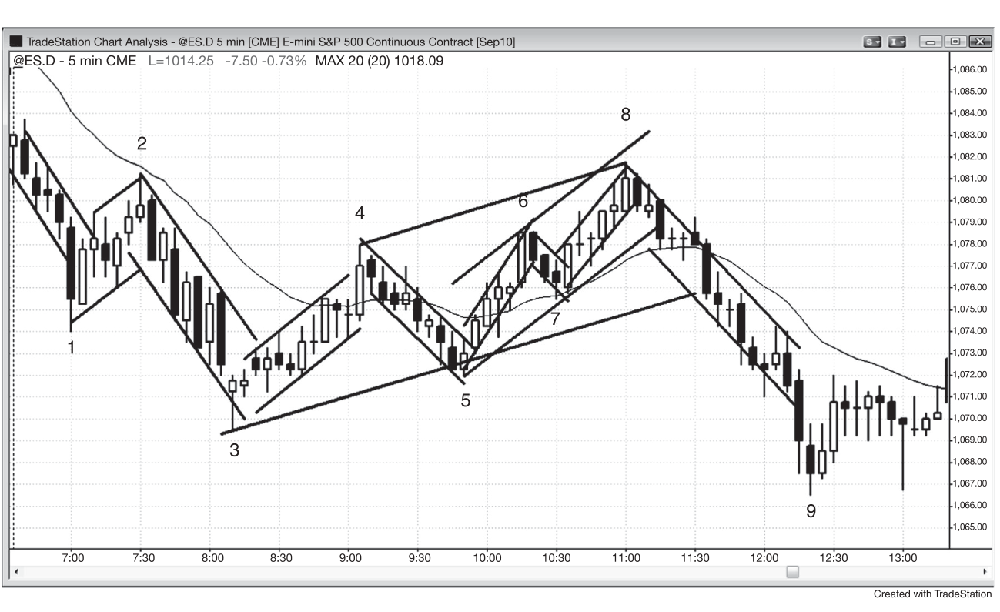
Channels are common on all charts, and some smaller channels are nested inside of larger channels. In Figure 15.1, notice that the lines do not always have to be drawn to contain all of the highs and lows in the channel. Drawing them with best fit lines helps to make the channel behavior clearer and often makes it easier to anticipate signals. Since most trading is institutional and placed by computer programs, it is reasonable to assume that each small, tight channel is due to program trading. Since there are so many firms running programs all day long, a channel probably can develop only when several firms are running programs in the same direction and with enough volume to overwhelm the programs that are trying to make the market move in the opposite direction. For example, in the channel down from bar 4, there were enough sell programs going on to overpower any buy programs, and the market moved down. When the buy and sell programs are largely in balance, the market moves sideways in a tight trading range, which is a horizontal channel.
Bull channels are indistinguishable from bear flags, and bear channels should be thought of as bull flags. When the channel is tight like from bars 2 to 3, buyers should wait until there is a failed breakout and reversal up before looking for longs, as occurred at bar 3. They could also wait for a pullback after the breakout, like the buying above the high of the small bar that formed five bars after bar 3.
Until either of these develop, traders should only be shorting. When a channel has broader swings like the channel from bars 3 to 8, trades can be taken in both directions, since it more clearly resembles a sloping trading range and trading ranges are two-sided markets that give both buy and sell signals.
Most of the channels in the chart were tight, and since several had no pullbacks or small (only one- to three-tick) one-bar pullbacks and lasted about 10 bars or less, they were also micro channels.
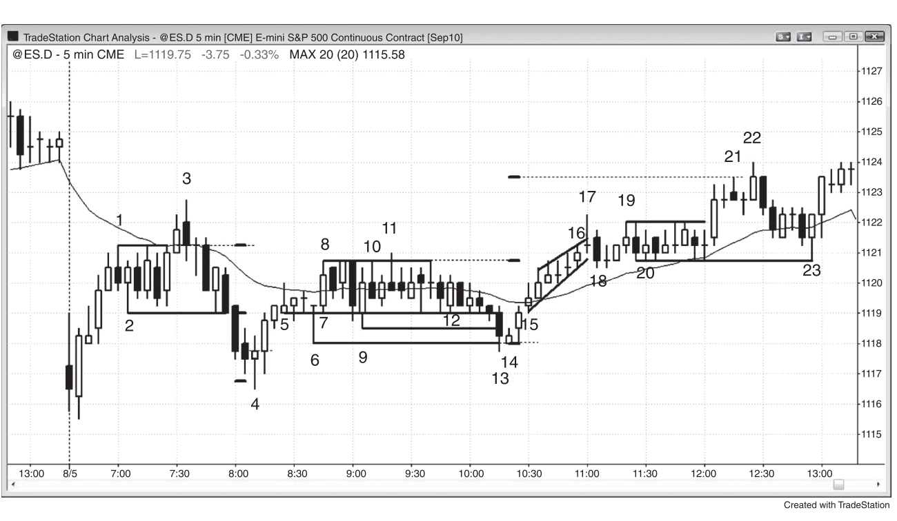
When there is a breakout of a channel and then a reversal back into the channel, the market usually tests the opposite side of the channel and often breaks out of the other side, at least minimally. If the breakout has follow-through, the first target is a measured move equal to the height of the channel. In Figure 15.2, bar 3 broke out of the top of a trading range and reversed back down. After breaking through the bottom of the channel, the bar 4 low was one tick below a perfect measured move.
Bar 11 broke above the top of a trading range and then the market tested the bottom of the range with bar 13. Sometimes there are several bars to choose from when drawing the lines, and it is usually worth being aware of all of the possibilities because you may not know which is best until several bars later. The widest channel is the most certain.
The bull inside bar that followed the bar 13 breakout set up a failed breakout buy. Since the market was again reversing into the channel, the first target was a test of the top of the channel. The breakout of the top was successful and the next target was a measured move up. Bar 22 went one tick above that target. Sometimes a trend will begin and carry much further.
Bar 17 broke above a bull micro channel or wedge and reversed back down on the next bar. Since the channel was so tight, the objective of testing the lower end of the channel was met on that next bar, but there was not enough room for a profitable short and no trade should be taken.
The measured move up for the breakout of the channel formed by bars 19 and 20 was at the same price as the measured move up from the trading range defined by bars 6 and 10. When multiple targets are around the same price, any reversal there has an increased chance of success. Bar 21 was a valid short setup but it failed on the bar after entry. There was a second entry below bar 22 and the market tested the bottom of the channel. There, it formed a bull reversal bar and the market then tested the top of the channel.
Deeper Discussion of This Chart
The market broke below a closing trading range with a large gap down in Figure 15.2, but the first bar was relatively large and had good-sized tails above and below. This is trading range behavior and not a good signal bar for a trend from the open buy or short.
The second bar was a strong bull reversal bar and signaled a long for a failed breakout and a trend from the open bull trend. The market entered a tight trading range just below the moving average, and it became a final flag with a failed breakout and reversal down. Although traders could short as soon as bar 3 went below the low of the prior bar, it was safer to wait until the bar closed to confirm that it would have a bear body, and then short below its low.
The rally to bar 1 was in a micro channel, so the bar 2 downside breakout was likely to not go very far without a pullback. When the market moved above the high of the bar 2 breakout bar, the breakout failed. At that point, the market went sideways as traders fought for control. The bears were looking for a higher high or lower high pullback from the bar 2 breakout, and the bulls simply wanted a failed breakout and then another leg up.
The bears won and the market fell in a micro channel down to bar 4, where the process reversed. Bar 5 was the signal bar for the failed breakout, but the four-bar bull spike was strong enough for traders to believe that the market would likely test higher, which it did in the move up to bar 8.
The move from bar 14 to bar 17 was another bull micro channel, and bar 18 was the breakout. The market then went sideways before the small trend resumed in the move up to bar 22.
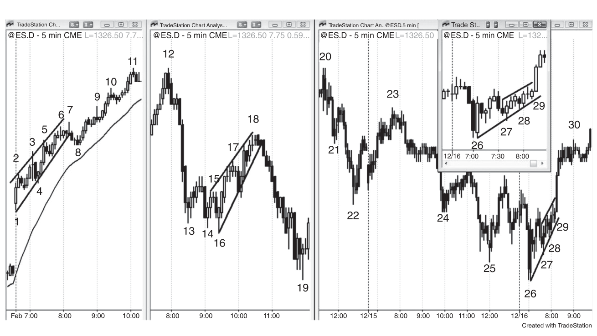
A bull channel can occur in any type of market. In Figure 15.3, the 5 minute Emini chart on the left had a bull channel in a strong bull trend, where the market gapped up and became a trend from the open bull trend day. The pullbacks were small, and the market worked higher all day. Because the day was a strong bull trend day, traders were buying small pullbacks, like at and below the low of the prior bar.
The bull channel in the middle chart was a wedge bear flag in a bear trend, and traders should not have been looking for longs. They could have shorted below the ii pattern at bar 18, or on any of the several following bars, as the market became always-in short.
The bull channel on the right was a small bear flag in an overdone bear trend. It formed after the large bear trend bar on the open, which was the third push down. Bar 26 (see insert) set up a strong two-bar reversal up from yesterday’s low. Even though the channel from bar 26 to the bar before bar 29 was a bear flag, traders believed that the market was reversing up, and bought below the lows of the prior bars, expecting the low 1 and low 2 sell setups to fail. Bar 29 was a strong bull trend bar that broke out of the top of the bear flag and turned the market into a clear always-in long. Not all bear flags break out to the downside. Some become the final flag of the bear trend, break out to the upside, and lead to a bull trend, as happened here.
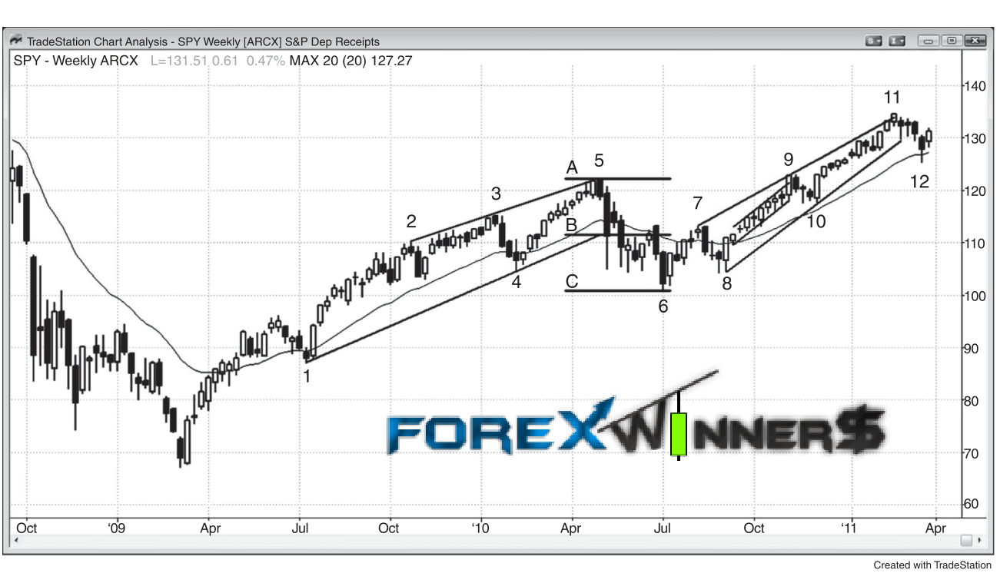
When the market successfully breaks out of any channel, the first target is a measured move. In Figure 15.4, a weekly chart of the SPY, the trend line was drawn across the lows of bars 1 and 4 and the trend channel line drawn from the highs of bars 2 and 3 was touched at bar 5. This is a bull channel and the lines are slightly convergent. Horizontal line A is across the bar 5 high and line B is the bottom of the channel directly below bar 5. Line C is a measured move down from lines A to B. Bar 6 found support at the measured move and a rally followed.
A similar target would have been projected using an Andrew’s Pitchfork, but since basic price action analysis gives the same result, it is all that you need. There were probably countless reasons why bears were taking profits around the bar 6 low and why aggressive bulls were buying. None of them is important since there is never any way to know how many dollars are being traded for each reason. All that you know is that the chart is the distilled result of all of those dollars being traded for countless reasons, and understanding recurring patterns puts you in a position to know when to take profits and when to consider reversal trades.
The move down to bar 1 was the first breakout below a tight, strong bull channel and was therefore likely to fail. When a first breakout fails and the trend resumes, it often extends up to a measured move that is approximately equal to the height of that initial reversal attempt. Here, the rally extended much further.
The channel that began after the bar 1 bull spike was also very tight, and the spike down to bar 4 was the first strong breakout. The reversal failed and the trend resumed. The bulls tried to extend the rally for about a measured move up. That measured move was equal to the height of bar 3 to bar 4, added to the top of bar 3, but the market did not quite reach the target.
The rally to bar 7 broke above the two-legged bull flag down to bar 6, and bar 8 was the breakout pullback. It was also the start of another bull channel, and the move down to bar 12 broke below the channel, reaching about a measured move down, based on the height of the channel and the height of the first leg down (bar 11 and the bar after it). Bars 3, 5, and 7 formed a head and shoulders top, and like most reversal patterns, became a large bull flag and not a reversal.
Deeper Discussion of This Chart
The bar before bar 6 in Figure 15.4 was a breakout pullback short setup and a low 2 short at the moving average. The bar after bar 5 had a large tail, as did several of the next bars, and that trading range below the moving average was a barbwire pattern, which often becomes a final flag, as it did here.
There was a one-bar spike up on the low of the chart, which was followed by a very tight channel. In fact, there were three or four tight channels in the rally (some traders saw the second spike from bar 1 to bar 3 as a single steep channel or spike, and others saw it as two). When a channel is tight, it often functions like a spike, and is followed by a channel. The pullback to bar 1 was followed by a two-bar spike and then another channel that again was so tight that it was likely to function as part of the initial spike.
After the pullback from bar 2, the channel up had several bear bodies, which was a sign of building selling pressure. The result was a strong four-bar bear spike down to bar 4.
The selling pressure was building, and bulls were likely to take profits on the test of the high. Although the channel up from bar 4 was tight and therefore possibly another spike, a spike can also function as a climax. This was the third or fourth consecutive buy climax (every spike, whether it is one bar or many bars, is a climax), and it followed a strong bear spike. Consecutive climaxes usually lead to a larger correction, as they did here.
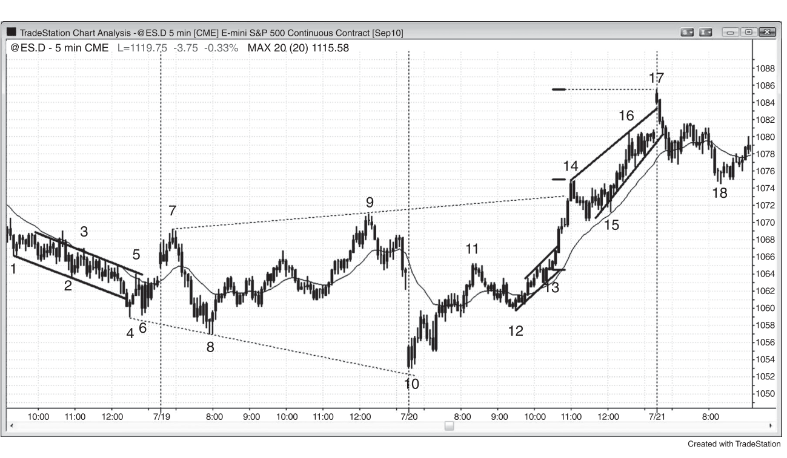
A bear channel that breaks out of the bottom of the channel can be followed by an even stronger bear trend, but the breakout usually soon becomes a climax and is typically followed by at least two legs up, as shown in Figure 15.5. Bar 4 broke below the bear channel but became a sell climax, as expected, and was followed by a two-legged rally that ended at bar 7.
There was a bull spike up to bar 14 that was followed by a pullback to bar 15, and then a wedge-shaped channel developed. The market broke out to the upside on the gap up to bar 17, but this breakout was just a buy climax that reversed back into the bull channel and then broke out of the downside. The correction had two legs, ending at bar 18. Many channels have three pushes in them before reversing, and bars 14, 16, and 17 were three pushes up.
The small bull channel that started at bar 12 broke out to the upside, and the breakout was very strong. All breakouts are climaxes, but climaxes don’t always lead to reversals. Some can become very strong breakouts, like this one. Once they finally finish correcting and the trend then resumes, it usually does so with less momentum (the slope is less) and there are usually more overlapping bars, which is a sign of increased two-sided trading.
When a bull trend is strong, traders will buy tests of the moving average, like at bars 13 and 15. The moving average therefore contains the trend, and functions like the lower line of a channel. You can write indicators to create a parallel of the trend line and place it above the highs, creating a channel, but usually curved channel lines or bands of any type do not provide as many reliable trades as do straight channel lines.
Deeper Discussion of This Chart
The strong move up from bar 13 to bar 14 in Figure 15.5 was almost vertical, and all strong bull breakouts should be thought of as spikes up and as buy climaxes. When the spike is composed of two or more large bull trend bars, it is particularly strong and more likely to have some type of measured move up before there is a significant correction.
Measured moves using the open or low of the first bar of the spike and the close or high of the last bar often are good areas for the bulls to take partial or full profits and sometimes are good areas for bears to initiate shorts. Bar 13 had no tail on the bottom and closed near its high; it was the first of many bull trend bars, so it is the bottom of the spike. The height of the spike using the open of bar 13 and the high of the bar 14 top of the spike projected a measured move up to the exact high of the channel, the bar
17 high.
Bar 7 was a second-entry moving average gap bar short in a bear trend, which often leads to the final leg in the bear trend before a larger reversal develops. The rally to bar
7 broke the bear trend line and was followed by a lower low trend reversal at bar 8.
Bar 10 was another lower low in what at that point was a trading range, but it was also an expanding triangle bottom. Expanding triangles often rally to a new high and set up an expanding triangle top. The market attempted to do that at bar 14, but the momentum was so strong that anyone thinking about shorting would have to wait for a second entry, which never set up. It was far better to be looking to buy a pullback than to consider taking a short after such a strong bull breakout. The expanding triangle top failed, as expected, and the breakout of the top of the trend channel line and the bar 9 high of the prior day was followed by a two-legged sideways breakout pullback correction to the moving average at bar 15.
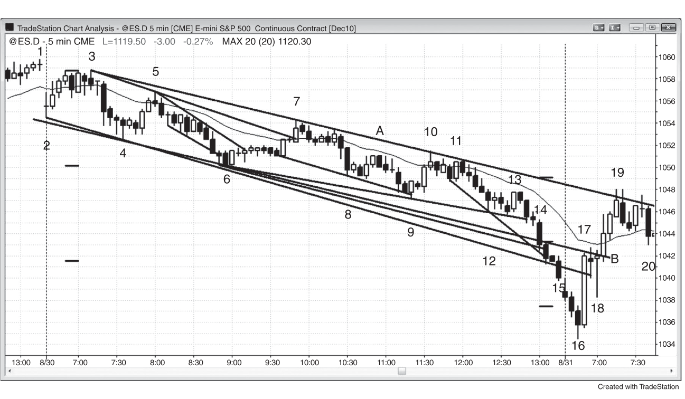
Once the market appears to be trending, look for all possible trend lines and trend channel lines because they are areas where the market might reverse. Traders will use every technique to draw the lines, like connecting swing points, creating parallels, and using best fit lines. Figure 15.6 shows some of the more obvious lines, but there were many others. Some would have been based on related markets like the cash index, and others were based on other types of charts like volume and tick charts. The shorts can take partial profits on the tests of the bottom of the channels near the trend channel lines, and aggressive bulls can initiate long scalps there. At the top of the bear channel, bulls will take profits on their scalps and bears will initiate shorts for swings and scalps.
The line A bear trend line created by the bar 3 to bar 7 high was tested to the tick six bars after bar 7 and again at bar 10 and bar 11, and it contained all of the upside price action. This made it clear that it was important today. Because it was important, creating a parallel (line B) and anchoring it at a swing low that contained all of the sell-offs would likely create a channel that traders would feel was significant. Bar 6 was the logical choice for the anchor.
Once bar 14 broke below the bottom of the channel, traders would look at a measured move down using the height of the channel at the time of the breakout for a possible measured move projection. The move was exceeded on the open of the next day. When a bear channel breaks out of the downside instead of the top, even if the breakout is sharp as it was here, it usually goes only a few bars before reversing. Once it reversed back into the channel on bar 17, the objective was a poke above the channel, which occurred at bar 19.
The sell-off from bar 13 to bar 16 had 10 bear trend bars with little overlap and large bodies with small tails, all signs of bear strength. This was unsustainable behavior and therefore climactic; it had to be an unusually large bear trend bar on some higher time frame chart, although nothing is gained by looking for the perfect higher time frame chart. Any large bear trend bar is a spike, a breakout, and a sell climax. The strong move up to bar 19 had to create a two-bar reversal with that sell-off from bar 13 on some higher time frame chart, and even a bull reversal bar on an even higher time frame chart. Never lose sight of the big picture, and don’t become frightened by an unusually strong sell-off. Yes, a huge bear spike is a strong sell climax and will often be followed by a protracted bear channel, but it can also represent exhaustion and lead to a big reversal, as it did here.
The market usually races to the top and bottom of the channel due to the vacuum effect. For example, bar 7 was a strong bull trend bar and there was another strong bull bar two bars earlier. Weak bulls saw a three-bar spike and a strong reversal up on the day and bought as bar 7 was forming and on its close and on the high 1 three bars later. Strong bulls instead exited their longs on the test of the top of the bear channel.
So why was the market vacuumed up with such force on a bear trend day when bears clearly controlled the day? It was because the bears believed that the trend line was going to get tested, so as the market got closer and closer to it, they became more confident that the price would soon reach the bear trend line. There is no incentive for them to short when they believe they can short at an even better price a few minutes later. This absence of the strongest of the bears creates an updraft that sucks the market up quickly to the trend line. The momentum traders kept buying until the momentum stopped and since there were fewer bears willing to short, the market quickly moved up to a price that represented value to the bears. Once there, the bears, who had been waiting for the test, shorted aggressively. They had been able overwhelm the bulls all day, as seen by the bear trend day, and both the bulls and bears knew that the bears were in control. There was a bear channel and the market was spending most of the day below the moving average.
Since everyone except novice traders knew that the odds strongly favored the failure of any attempt to break above the trend line, it was a great location to put on shorts. Also, shorting when the bulls were at their strongest gave the bears a great entry. They saw the market as overextended and not likely to go much higher. Since they believed that the market might not go another tick higher, they finally came back into the market and shorted heavily and relentlessly, even though they were on the sidelines for several bars. The bulls used the test as a place to take profits on their scalps. Both the bulls and the bears knew that the market would be at the top of the channel only briefly, so both acted quickly. The bulls quickly scalped out of their longs because they did not want to risk the market reversing down quickly below their average entry price, and the bears began shorting heavily and continued to short all the way down to the test of the bottom of the channel. There, some took partial profits and others continued to hold short until they saw a strong trend reversal, which did not come until the next day.
Deeper Discussion of This Chart
The market formed a wedge bear flag with bars 2, 4, and 6 in Figure 15.6, and once the market broke below the flag, it fell to a measured move down, reaching the target three bars before the close.
The day opened with a small gap down but the first bar was a doji and therefore a weak setup for a failed breakout long. By bar 3, the day was a trading range so it was acceptable to short below the bar 3 low 2, especially since the high or low of the day usually forms in the first hour and this was a possible high of the day. The market might have been forming a lower high and was failing to hold above the moving average.
Bar 5 was a test of the breakeven stops of the traders who shorted below bar 3, and set up another low 2 short at the moving average. The market was forming lower highs and lows and might have been in the early stages of a bear trend.
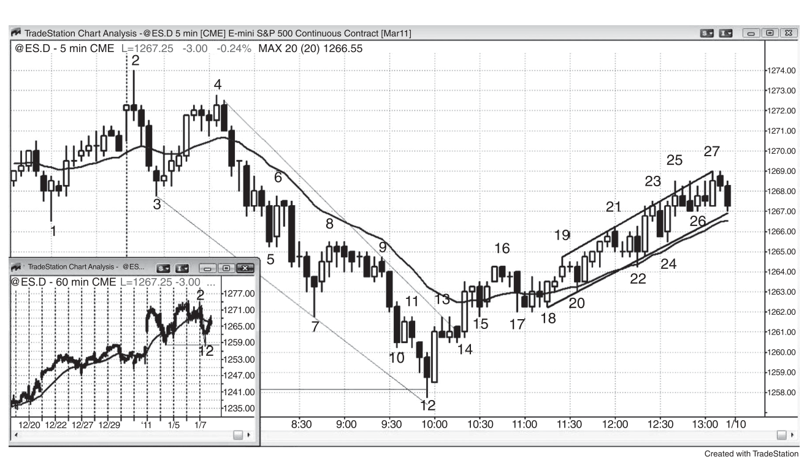
When the market is in a channel, the reversal setups often don’t look quite right. That is because they are not reversal setups, but just the beginning of flag pullbacks. In Figure 15.7, the Emini completed a wedge bull flag down to bar 12, which poked a couple of ticks below an earlier low on the 60 minute chart (insert) and set up a large double bottom bull flag. Traders saw the market as flipping to always-in long on the bar after bar 12, on bar 14, or on the breakout above the bar 18 signal bar for the bull breakout of a small triangle (bars 15, 17, and 18 were the three pushes down).
A bull trend is either in a spike or in a channel. Since the market was not in a strong spike, traders assumed that it was in a bull channel, which meant that there would be pullbacks. Anything that looked like a low 1 or low 2 signal bar was then a buy signal. Instead of shorting below those bars, there would likely be more buyers at and below the lows of the signal bars. This is what happened with the low 1 short signal bar that followed bar 17. Traders bought the breakout below the bear inside bar, because they saw the market as always-in long and in a bull channel, and not in a bear leg. They wanted to buy at and below the low of the bar before bar 18, expecting the low 2 sell signal to fail. However, the bulls were so eager to get long that they placed their buy limit orders one tick above the low of the bar. They were afraid that there would not be enough bears left to push the market below the low of the sell signal bar, and they did not want to get trapped out of what they saw as the early stage of a bull trend. They saw the market as always-in long, and believed that the bears were wrong and that any sell signal would fail. They expected any sell-off, along with any opportunity to buy on a markdown in price, to be brief. They were happy to see any bear trend bar, especially a low 1 or low 2 that might trap bears, who would then be forced to buy back their losing shorts as the market reversed up. These bears would then be buyers, helping to lift the market, and they would be hesitant to short again for at least a few bars. This would make the market one-sided in favor of the buyers, giving them at least a scalper’s profit, and possibly a swing profit.
Because the three pushes up to bar 16 were in a tight bull channel, many traders saw that wedge as a single spike up and were looking for a bull channel to follow after a pullback. Since the three prior pullbacks in the rally were between five and nine ticks, bulls would have placed limit orders to buy pullbacks of about that size. The pullback to bar 20 was seven ticks, the pullback to bar 22 was eight ticks, and the pullback to bar 24 was also eight ticks. Other traders just buy with limit orders at one to three ticks below the low of the prior bar in a channel, risking to below the most recent swing low. For example, they bought as bar 20 fell below the small doji before it, or below bar 19, and had their protective stops below bar 17. To a beginner, this is counterintuitive, but to experienced traders, this is an opportunity. They know that 80 percent of attempts to break below the bottom of the channel will fail, so buying as the market is making an attempt is likely to be a good trade.
Bears who saw the entire move up from bar 12 as an overdone bear rally were unhappy with how weak the short signals were at bar 13, the bar before bar 15, bar 16, the bar after bar 19, the bar before bar 21, bar 23, and the bar after bar 25. Whenever the market is working higher in a relatively tight channel, all of the sell signals tend to look bad, because they are not really sell signals—they are just the start of small bull flags. Since the strong bulls are buying below the lows of the prior bars and on limit orders that are located between maybe five and 10 ticks below the most recent swing high, it is a low-probability bet to short exactly where the strong bulls are buying. In a tight bull channel, it is rarely wise to short below the low of a bar unless there has been a strong climactic reversal after a breakout of the top of the channel, and even then it is often better not to short below a bar until after a sell-off that is then followed by a lower high. Remember, the market is always-in long and it is always better to only buy until the market flips to always-in short. It is easy to look at the channel and see it as weak, and to look at the sell-off down to bar 12 and assume that the bears will return, but you have to trade the market in front of you, not the one that just ended or the one that you think should soon begin.
When a channel has relatively small bars, bars with prominent tails, and trend bars in the opposite direction, there is significant two-sided trading taking place, even though the channel is a trend. This creates an opportunity for countertrend scalpers. The channel up from bar 18 is an example. Bears will short the closes of bull trend bars above prior swing highs, like the bar after bar 22, and the closes of small bull bars that follow, like bar 23, for scalps. Many are willing to scale in higher (scaling into trades is discussed in book 2). For example, if they shorted the close of the bull trend bar after bar 20 and one or more of the closes of the small bull bars that followed, or a point or so above their first entry, they would then take profits on their entire position at their original entry. That original entry would then be a breakeven trade and their later entries would give them a scalper’s profit. These profit-taking bear scalpers bought back their shorts on the low of bar 22, since its low fell below the entry price of their first entry (the close of the bull trend bar after bar 20). That bar was also a test of the moving average, so there were also bulls who bought the test, in addition to the profit-taking bear scalpers who exited because the market reached whatever profit target they were using, such as the close of the bull trend bar after bar 20, the moving average, a breakout test of the 16 high, or five ticks below the high of the doji bar after bar 20 (as discussed in book 2, that was a weak buy signal bar, so bears would have shorted with a limit order at its high, and they would have scalped out one point lower; this meant that the market had to fall five ticks, which it did at the bar 22 low). There are always many different traders entering or exiting at every tick all day long for every conceivable reason. The more reasons that line up in the same direction, the more likely the market will trend.
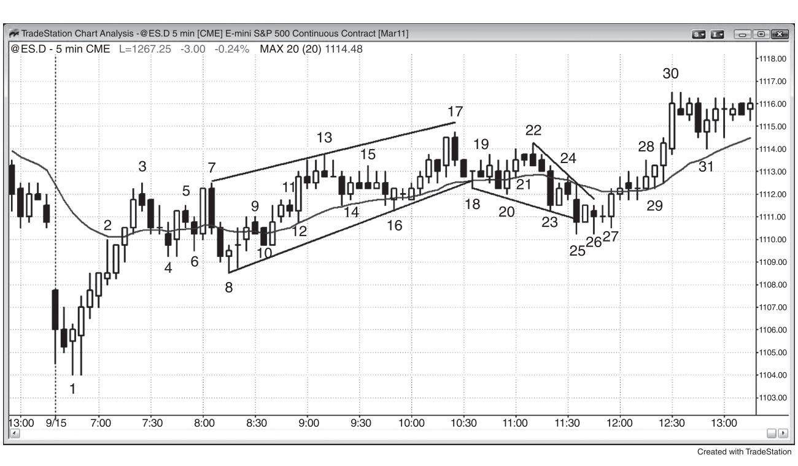
In addition to entering on stops, entering on limit (or market) orders can be an effective approach whenever the market is in any type of channel, including triangles and trading ranges. In Figure 15.8, the market had eight consecutive bull trend bars in the strong bull spike up to bar 3, so the market was likely to have a test of the high after a pullback. Although bears shorted below the bar 3 bear reversal bar, bulls were scaling in on limit orders below the low of the bar. Some bought on a limit order at the low of bar 3, but because the next bar was a strong bear trend bar, there were far more sell orders. Other bulls bought on a limit order at one tick above the moving average, since the market might have only touched the moving average and not filled a buy limit order exactly at the moving average. Some bulls scaled in lower, maybe buying more at one-point intervals. If they did, they could have then put a limit order to exit both positions at the entry price of the first order, at or just below the low of bar 3. They would have been filled on bar 5, would have broken even on the first entry, and would have made a profit on their second. This profit taking by these bulls contributed to the bear reversal bar at bar 5.
Traders saw the doji inside bar after the bear trend bar that followed bar 3, and many thought that this was not a good short setup. Since they believed that shorting below the bar would likely not yield a profitable scalp, some traders instead bought on a limit order at or one or more ticks below its low. This buying contributed to the tail at the bottom of bar 4. Bar 4 was the fourth consecutive down bar, which is enough bearish momentum to make traders hesitant to buy above its high, even though they believed the market would test the bar 3 high. They expected the first attempt up would likely fail and they preferred to wait for a two-legged pullback to buy. Bears realized this and thought that the traders who bought above bar 4 would likely lose money. This made shorting on a limit order at or just above the high of bar 4 a reasonable scalp. They exited with a one-point profit as bar 6 fell five ticks below the high of bar 4. Why was the low of bar 6 exactly five ticks below the high of bar 4? In large part because those short scalpers became buyers as they took their profits down there, and their buying helped create the tail at the bottom of bar 6.
Since most traders still believed that the market should test the bar 3 high, they were still looking to buy. Since the market clearly became always-in long in the spike from bar 1 to bar 3 and there was not yet a clear flip to short, the always-in position was still long. Therefore, they did not believe that shorting below the low of bar 5 was a good trade. Given that they thought it would be a losing trade, many traders did the opposite and bought on a limit order at or below the low of bar 5. Their buying, in addition to the buying by the shorts who were taking profits from their scalp down from above bar 4, created the tail at the bottom of bar 6.
Bar 6 was a two-legged sideways correction down from the bar 3 high, and many traders bought above bar 6 on a stop for the test of the bar 3 high. At the same time, many of the traders who bought below bar 5 sold out for a profitable scalp on the rally.
Although the market formed a double top at bar 7, many traders did not expect a trend reversal and instead expected a trading range and then a bull channel because that is what usually happens after such a strong spike on a day where a strong case could be made that bar 1 was likely going to remain as the low of the day. Bar 7 formed a two-bar reversal with the bar before it and the better entry is below the lower of the two bars. The problem with entering below the low of the bar 7 bear bar is that the market often has a one-tick bear trap. This means that it falls one tick below the bear bar but not below the low of both bars of the two-bar reversal, and then the rally resumes. This risk is less if you enter below the low of both bars, and that is why the market reversed up six ticks later. The bears bought back their shorts on a profit-taking limit order located five ticks below the signal bar low, which usually requires the market to fall six ticks. The bar 8 low was exactly six ticks below the bottom of the two-bar reversal.
If this was a strong bear trend, traders could short on a stop below the prior swing low at bar 4. Since most traders thought that the low of the day was in and that the market would likely form a bull channel, they thought that shorting below the bar 4 low was a bad idea. This means that buying below its low might be a good long, especially if the traders could scale in lower if need be. Also, since the market was likely to form a channel that could last for hours and the market might not again come down to this level, these bulls could swing some or all of their positions.
Other bulls saw bar 8 as the second leg down from bar 3 (bar 4 was the first leg down) and they bought above the high of bar 8 on a stop. The bar after bar 8 was a doji bar, which indicates that the market is still two-sided. Bar 8 was not a strong bull reversal bar, and the two-bar spike down from bar 7 made traders wonder if the market might be reversing. Traders had to decide if they thought that bar 9 was going to be the lower high pullback that would lead to a bear channel, or if always in was still long and that the market was in the early stages of a bull channel.
The traders who thought that the bottom was in believed that bar 9 was a bad short setup and they placed limit orders to buy at and below the low of bar 9. Many of these bulls would have added on if the market fell below the bar 8 low. The bears who shorted below bar 9 bought back their shorts when the market reversed above the bar 10 entry bar. Bulls also bought, believing that this failed short was more evidence that a bull channel was forming.
Channels have lots of pullbacks along the way, and the bulls would not let themselves be stopped out by a pullback. Instead, they would buy on a limit order at or below the low of the prior bar, like below bars 9 and 11. Since channels have two-sided trading, as long as the channel is not too tight and too steep, bears will short at or above swing highs. For example, they would have shorted as bar 12 went above the bar 7 high and some would have added on one point higher. This in part was the reason that the high of bar 13 was exactly five ticks above bar 7. They would also have shorted on the move up to bar 17 as the market went above the bar 13 high. Some bears would even have shorted the sharp rally up to bar 30 as it moved above the bar 17 high and they would have added on one point higher. They could have bought back both shorts at the original entry price as the market fell to bar 31. Their original short would have broken even and their add-on would have made a one-point profit.
The bulls would have looked at the rally up to bar 29 as having trending highs, lows, and closes, and therefore would have believed that it was strong. Some would have bought more on a stop at one tick above the bar 17 high. They could have exited with a profit on bar 30. Whenever a breakout trade results in a profit, it is a sign that the trend is strong. However, it is not absolute and if the market is mostly in a trading range, as it was today, there may not be follow-through.
There was two-sided trading throughout the day and both bulls and bears were entering on limit orders and on stops. For example, once the always-in position flipped to short at the bar 17 wedge top (wedge reversals are discussed later), bears began shorting above the high of the prior bars, like above bars 18, 20, and the bar after bar 24. Bulls were buying below prior swing lows, like below bars 20 and bar 23. There were many other setups during this day, as there are on all days, but the purpose of this chart is not to show every possible trade. Instead, it is to make the point that when the market is in a bull channel, bulls are buying below the low of the prior bar and bears are selling above swing highs. In bear channels, they do the opposite—bulls buy below swing lows and bears short above the high of the prior bar.
Micro Channels
A micro trend line is a trend line on any time frame that is drawn across from 2 to about 10 bars where most of the bars touch or are close to the trend line and the bars usually are relatively small. Typically a trend channel line can be drawn along the opposite ends of the bars as well, and the result is a very tight channel called a micro channel. Unlike a conventional channel where pullbacks are common, a micro channel progresses with no pullbacks, or rare, small pullbacks, making it an extremely tight channel.
The more bars, the stronger the bars (like bars with big trend bodies in the direction of the micro channel), and the smaller the tails, the stronger the micro channel, and the more likely that the first pullback will fail to reverse the trend. A micro channel can last for 10 or more bars, and other times it will run for about 10 bars, have a small pullback, and then resume for another 10 bars or so. It does not matter whether you view the entire channel as one big micro channel (a micro channel is a type of tight channel), two consecutive micro channels separated by a small pullback, or a large tight channel, because you will trade it the same way. The trend is very strong and traders will look at reversal attempts to fail and become pullbacks and for the trend to continue.
Ten years ago, traders saw micro channels as a sign of program trading. Now, since most trading is done by computers, it adds nothing to say that micro channels are signs of program trading, because every bar on the chart is due to program trading. A micro channel is just one particular type of program trade, and it is likely due to many firms running programs simultaneously. One or more firms will start it, but once the momentum is underway, momentum programs will detect it and begin trading in the same direction, adding to the strength of the trend. Once the trend begins breaking above resistance levels, breakout programs will start trading. Some will trade in the direction of the trend and others will begin to scale in against the trend, or scale out of longs that they bought lower.
Eventually one of the bars penetrates through the trend line or the trend channel line, creating a breakout. Bull and bear micro channels can develop in bull or bear trends, and in trading ranges. The environment in which they occur determines how to trade them. Both bull and bear channels can have breakouts to the upside or the downside. As with all breakouts, three things can then happen: it can be successful and be followed by more trading in that direction, it can fail and become a small climactic reversal, or the market can just go sideways and the pattern can evolve into a trading range.
As with any breakout, traders will trade either in the direction of the breakout, expecting follow-through, or in the opposite direction, if they expect the breakout to fail. Breakouts, failed breakouts, and breakout pullbacks are closely related and are discussed in book 2. As a guide, traders compare the strength of the breakout with that of the reversal attempt. If one is clearly stronger, the market will likely go in that direction. If they are equally strong, the trader needs to wait for more bars before deciding where the market is likely to go next.
When a bear micro channel forms in a bull trend, it is usually a bull flag, or the last leg of a bull flag, and traders will look for a signal bar and then place a buy stop above its high to enter on the breakout of the bear micro channel and of the bull flag. When a bull micro channel forms in a bear trend, it is usually a bear flag or the final leg of a bear flag and traders will short below any signal bar.
If instead of a bear micro channel forming in a bull flag, the micro channel is a rising micro channel (a bull micro channel) in a bull trend, the first downside breakout (the first pullback) will usually not go far, and it will be bought aggressively. The more bars in the bull micro channel, the more likely that the bear breakout will not reverse the bull trend. For example, if there is a five-bar bull micro channel in a bull trend, there will probably be far more buyers at and below the low of that fifth bar than sellers. If the market trades below that fifth bar, the bar creates a bear breakout of the bull channel. However, it is unlikely to lead to more than a bar or two of selling because the bulls will be eager to buy the first pullback from the strong micro channel bull trend. Remember, many traders have been watching the rally for five bars, waiting for any pullback to buy. They will be eager to buy below the fifth bar and above the high of the pullback bar, which is a failed breakout buy signal bar (a high 1 buy setup). If the market triggers the long but creates a bear reversal bar within a bar or two, this then sets up a micro double top sell signal. It can also be thought of as a pullback from the breakout below the bull micro channel, even if its high is above the highest bar in the micro channel. It would then be simply a higher high reversal, which is a micro version of a major trend reversal (reversals are discussed in book 3).
It is important to realize that traders do not have to wait for a pullback to get long. Many experienced traders understand what is happening after the second or third bar of the bull micro channel in a bull trend. They think that the market is in the early stages of a very strong buy program where momentum buy programs are also buying aggressively. These traders will try to copy what the computers are doing and will buy every bull close, and place limit orders one or two ticks below the close of every bar, and one or two ticks above the low of the prior bar. If the biggest pullback in the micro channel has been five ticks, they will place limit orders to buy any three- or four-tick pullback. They expect that the first time a bar falls below the low of the prior bar will attract even more buying, so they know that their most recent buy will likely be profitable, despite the pullback. Since they made money all the way up, they are not worried about getting out at breakeven or with a small loss on their final entry when a pullback finally does come.
As with any channel, a bull micro channel can form in a trading range, or within a bull or bear trend. When it is in a bull trend, higher prices are more certain, and traders should look to buy near the middle or bottom of the prior bar. When the micro channel is especially tight, it can be a spike on a higher time frame chart; a broader channel may follow, and it might reach a measured move target based on the height of the tight micro channel. When a bull micro channel is in a bear trend, it is a bear flag, and traders should look to short the downside breakout or the pullback from a downside breakout. When a bull micro channel forms after a possible low in a bear trend, it can become the final flag in the bear trend and break out to the upside instead of to the downside, and the breakout can be the spike that leads to a bull trend. When a bull breakout occurs, it usually follows a failed low 1, 2, or 3.
A micro channel is a sloping tight trading range, and therefore it has a strong magnetic pull that tends to prevent breakouts from going very far. It is also often tight enough to sometimes act as a spike, and it can be followed by a broader channel, creating a spike and channel trend. When there is a breakout from a micro channel, it is usually just for a bar or two and is mostly due to profit taking. For example, if there is a bull micro channel (an upwardly sloping micro channel) and a bar trades below the low of the prior bar, that is a breakout below the micro channel. This is primarily due to bulls taking profits, although there are some bears who are shorting. Within a bar or two, other buyers come in, some bears exit, and the market usually trades above the high of the prior bar. Some traders will see this as a failed breakout of the micro channel, and they will buy as the market goes above the high of the prior bar. For them, this is a high 1 buy setup. Others will assume that the trend is reversing down; they will wait for the market to form either a higher high or lower high breakout pullback over the next couple of bars, and then they will short below the low of the prior bar. The overall context can give a clue to which outcome is more likely. For example, if the market is in a strong bear trend and the bull micro channel is just a pullback, the odds favor that the breakout below the micro channel will be followed by more selling. If the market trades above the breakout bar, bears will place stop orders to short below the low of the prior bar. If instead the bull micro channel is forming as a breakout from a trading range in a bull market, the odds favor the breakout below the micro channel becoming a pullback in the bull trend, and bulls will place buy orders at one tick above the high of the prior bar.
A breakout of the trend line sets up a with-trend entry. For example, if there is a bull micro channel and the market is always-in long, and then there is a bar with a low below the micro bull trend line, then buying the high of that bar can be a reliable trade. This is a tiny but strong one-bar bull flag (a high 1 buy setup) and it is a failed breakout buy signal. It might be a two-legged correction on a smaller time frame chart; however, it is better to not look, because you will find yourself with too much information to process in a short time and you will likely mismanage or not take the trade.
If the bull micro channel is within a trading range or in a bear trend instead of in a strong bull trend, you have other things to consider before buying above the failed bear breakout. If the channel is at the top of a trading range, it is often better not to buy the failed breakout and instead to wait to see if the reversal back up stalls and becomes a higher high pullback from the breakout. If it only goes up for a bar or two and then forms a bear reversal bar, this can be a reliable short setup when it is near the top of a trading range (a micro double top, discussed in book 3). If the bull micro channel is a bear flag just below the moving average, you should only look to short, since the odds are that the shorting by the bears will overpower the bulls who bought the pullback. Wait for the breakout below the channel and then for the failure and one more push up. If that reversal back up forms a bear reversal bar at the moving average within a bar or two, this is usually a reliable breakout pullback short setup (a low 2). The market broke out of the downside of the bull micro channel and then pulled back to a small higher high. Finally, if it reversed back down, it set up a breakout below what has become a bear flag.
As with any breakout below a bull channel, there might be a pullback and then a resumption of the selling. That pullback can be a lower high or a higher high (a higher high means that the high of the bar goes above the high of the most recent swing high, which is likely the highest bar in the bull channel). Because most attempts at reversing a trend fail, the odds are in favor of the bear breakout failing and becoming just a pullback in the bull trend, followed by the bull trend resuming. Traders should place an order to go long at one tick above the high of the breakout bar, in case the bear breakout fails and the bull trend resumes.
However, they must be aware that their long might be a bull trap, trapping them into a losing long trade. Remember, although most attempts to reverse a trend fail, some succeed. Instead of the breakout to the downside failing, the market might be just briefly pulling back from the bear breakout and forming a small higher high or lower high before the selling resumes. This could be followed by a successful trend reversal into a bear leg or trend. Because of this, the trader has to be prepared to reverse to short below his long entry bar, if the overall price action makes a reversal seem appropriate. In this case, this is a breakout pullback short setup. Whenever a breakout fails, this failure sets up a trade in the direction of the original trend. If that also fails, then it becomes a breakout pullback from the original bear breakout (opposite failures create a breakout pullback) and a second attempt to reverse the trend to down.
If the breakout pullback short triggers (by the bar going one tick below the low of the prior bar, which is usually the bull breakout bar), look at the size of the bodies of the recent few bars. If the bars are bull or bear trend bars, then this second failure has high odds of being a successful second entry short. Remember, the first failure was when the bears lost on the failed downside breakout, trapping them out of their short trade. The second failure was when the bulls were trapped into their losing trade, which was set up by the failed bear breakout below the channel. If the market now turns down again, you have just had bears trapped out and bulls trapped in. In general, if both sides get trapped in or out, the odds of success of the next setup increase. If the bars have more of a doji look, then the market will likely enter a trading range, but the odds still favor a downside breakout. If you are not certain, then wait because it is likely that most traders will not be certain and a trading range will usually follow.
Although the vast majority of micro trend line breakouts are one- and twolegged pullbacks on the 1 minute chart, you should avoid trading off that chart because you will likely lose money. Most traders are unable to take all of the signals and invariably pick too many losers and not enough winners. The best trades often set up fast and trigger quickly and are therefore easy to miss. Many losing trades are often slow to set up and give traders plenty of time to enter, trapping them in the wrong direction.
That bull micro channel could instead have a breakout to the upside, above the trend channel line, in an attempt to form an even steeper bull trend. If it fails and there is a strong bear reversal bar, this buy climax is a potential short setup.
When a micro trend line extends for about 10 or more bars, the odds increase substantially that there will soon be a tradable reversal. This type of trend is unsustainable and therefore a type of climax, which is usually followed eventually by a pullback or a reversal. After such climactic behavior, be ready to take a breakout pullback entry. This is the second attempt to reverse the trend, with the original trend line breakout being the first.
A micro trend line break is important not only when the micro trend line is part of a micro channel, but also whenever there is any strong trend underway. If there is a strong bear trend with large bear trend bars and little overlap between consecutive bars and there are no pullback bars for four or five bars, you are likely eager to get short. Look for any bear micro trend line and then sell below the low of any bar that pokes above any bear micro trend line. Any poke through it is a setup for a failed breakout short entry. Enter at one tick below the bar that breaks above the bear micro trend line (a low 1 short setup).
Small, steep trend lines, even drawn using two consecutive bars, often provide setups for with-trend trades. If the trend is steep, sometimes a small pullback bar or a pause bar can penetrate a tiny micro trend line. When it does, it can become a signal bar for a with-trend entry. Some of the penetrations are smaller than one tick in the Eminis, but are still valid.
When there is a trend and then it has a pullback, it is common to see a micro trend line in the pullback. For example, in a pullback in a bull trend, if there is a bear micro trend lasting about three to 10 bars, and then there is a break above that bear micro trend line, this theoretically sets up a short on the failed breakout. Since this is occurring during a bull trend and it almost always happens above or near the moving average, you should not be shorting this pattern. You would find yourself holding a short at the bottom of a bull flag near a rising moving average in a bull trend, which is a very low-probability trade. As this short will likely fail, you should anticipate this and be ready to buy the failure, getting in exactly where the trapped shorts will get out. Your long will be a breakout pullback buy since the market broke above the bear micro trend line and then pulled back to either a small lower low or a higher low, and then the market resumed in the direction of the breakout, which is also the direction of the major trend of the day.
It is critical to remember that micro trend lines should only be used to find withtrend setups. However, once the trend has reversed, for example after a bull trend line break and then a reversal down from a higher high, you should be looking for micro trend line short setups, even if they are at or just above the moving average.
As with any chart pattern, a micro channel’s appearance is different on both smaller and higher time frame charts. Even though the trend bars in a micro channel or any other type of tight channel are usually not large and there is usually a lot of overlap between adjacent bars, the trend is strong enough to be a large trend bar or a series of trend bars on a higher time frame chart. This means that it often functions as a spike, and is often followed by a broader channel, like any other spike and channel trend. Also, even though there are no pullbacks in the micro channel, there are many pullbacks if you look at a small enough time frame chart.
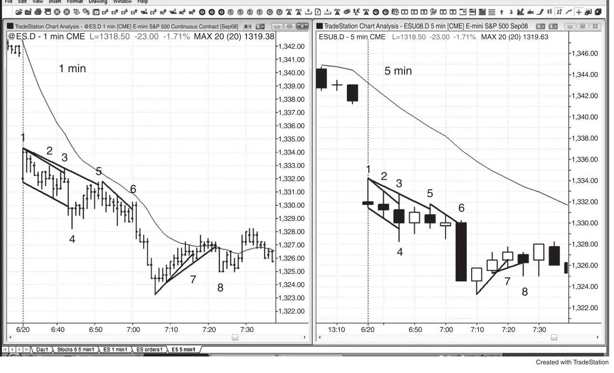
Small trend lines can generate many scalps during the day, especially on the 1 minute chart, which is seldom worth trading. In Figure 16.1, the chart on the left is a 1 minute Emini chart and the numbers correspond to the same bars on the 5 minute chart on the right. Both show that failed breakouts from tiny trend lines can result in profitable fades. There are other trades on the 1 minute chart that are not shown because the purpose of this figure is only to show how 5 minute micro trend lines correspond to more obvious, longer trend lines on the 1 minute chart, so if you can read the 5 minute chart, you do not have to additionally look at the 1 minute chart to place your orders. Many of these trades could have been profitable scalps on the 1 minute chart.
Note that several breaks of micro trend lines on the 5 minute chart are easy to overlook and are less than one tick in size. For example, bars 3, 5, 6, and 7 were failed micro trend line breaks on the 5 minute chart that would have been invisible to most traders, but the one at bar 5 was particularly significant and led to a good short scalp. It was the second failed attempt to break above a bear trend line (bar 3 was the first).
The failed breakout below the bull micro channel at bar 7 was a risky long and a scalp at best. Since it was a bear flag pullback to the moving average, it was better to expect the move up to stall and become a breakout pullback sell setup, which it became here.
Price action trading works even at the tiniest level. Note how bar 8 on the 1 minute chart was a higher high breakout test (it tested the high of the bar that formed the low of the bear trend) long setup and that although the market came down to test the bar 8 signal bar low two bars after entry, the protective stop below the signal bar would not have been hit. Also note that there was also an even smaller major reversal in this segment of the 1 minute chart. There was a tiny bull trend, indicated by the bull micro trend line up from the low of the chart, then a break of the trend line at bar 7, and then a higher high test of the tiny bull trend extreme. Since the pattern is so small, the trend reversal down to bar 8 was just a scalp, as expected.
On the 5 minute chart, bar 8 did not set up a long. Why? Because it was a pullback in a bear trend. You should not be buying the top of a pullback in a bear trend day. Instead, once you see the micro trend line buy trigger, get ready to short its failure, entering exactly where the trapped longs will be forced out with their losses.
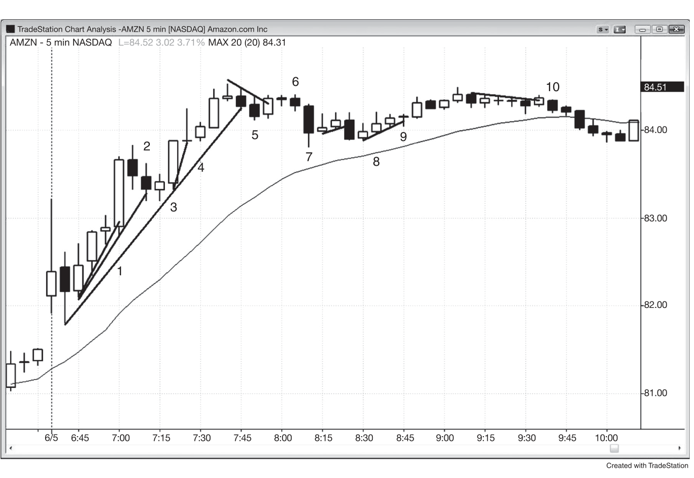
Even trend lines created using just two or three consecutive bars in a steep trend can set up with trend entries when there is a small break that immediately reverses. Each new break becomes the second point in a longer, flatter trend line until eventually trend lines in the opposite direction become more important, and at that point the trend has reversed.
In Figure 16.2, bar 1 dipped below a three-bar trend line and reversed up, creating a long entry at one tick above the prior bar.
Bar 2 dipped below a six-bar trend line. Traders would have placed buy stops above its high. When not filled, they would move their buy stops to the high of the next bar and would have been filled on bar 3. This was a high 1 buy entry, and most bear breakouts of bull micro channels in a bull trend fail and become high 1 buy setups. Since the micro channel is usually breaking above something, like a prior high, as it did here when it moved above the first bar of the day, the high 1 is usually also a breakout pullback buy setup. Incidentally, the bar before bar 2 was a possible short setup based on a failed breakout of a micro trend channel line (not shown) that is a parallel of the three-bar micro trend line leading up to bar 1. The upward momentum was too strong for a short without a second entry, but this illustrates how micro trend channel lines can set up countertrend trades.
Bar 4 was a small inside bar that extended below a two-bar trend line (the penetration is not shown). The buy is on a stop at one tick above the high of the small inside bar.
Bar 5 broke the major trend line of the day (any trend line lasting about an hour or so is more significant), so traders would be thinking that a two-legged pullback was more likely. After the break above the bear trend line on the bar following bar 5, a short would be triggered on the bar 6 lower high. When bars are small doji bars like those following bar 5, it is usually best to wait for bigger trend bars before taking more trades, but these trend line reversals still led to profitable scalps of 30 to 50 cents in Amazon (AMZN). Since bar 5 was the first breakout of a fairly tight bull channel, it is better not to short it and instead to wait for a breakout pullback to short.
Bar 6 was a reasonable lower high breakout pullback short entry for a scalp down toward the moving average. This was not a good trend reversal trade because there had yet to be a test of the moving average followed by a test of the bull trend high.
Bar 6 was a micro trend line short in a bull trend, which is a bad trade when it occurs close to the moving average. Here, however, there was plenty of room down to the moving average; in addition, it was following a wedge top and therefore would likely be part of a two-legged correction down.
Unlike a conventional channel, where pullbacks are common, in a micro channel the lack of pullbacks is one of its defining characteristics. For example, in the bull micro channel that started on the bar before bar 8, the first leg ended with the small bar 9 pullback. Some traders saw the next four bars as part of the same channel, with bar 9 as a pullback, and other traders saw bar 9 as the start of a second micro channel. It really does not matter, because the sideways move to bar 10 broke below both.
Deeper Discussion of This Chart
The market gapped up in Figure 16.2 and therefore broke out above the close of yesterday and the first bar was a bull trend bar. The body was reasonably strong and there was a tail below, both showing buying pressure. Yesterday closed with some bull bodies, again showing strength by the bulls, so this bar was not a strong signal bar for a short on the basis of a possible failed breakout setup. The second bar had a bear body and dipped below the low of the first bar and was a reasonable breakout pullback long setup for a possible trend from the open bull day. There were four bull trend bars, creating a spike up, but the final one had a large range and might indicate some exhaustion. This led to the first pullback long setup, and bar 3 was a strong entry bar. This was also a breakout pullback long from the breakout above the opening high. Since the first bar of the day was unusually large, it could and did lead to about a measured move up.
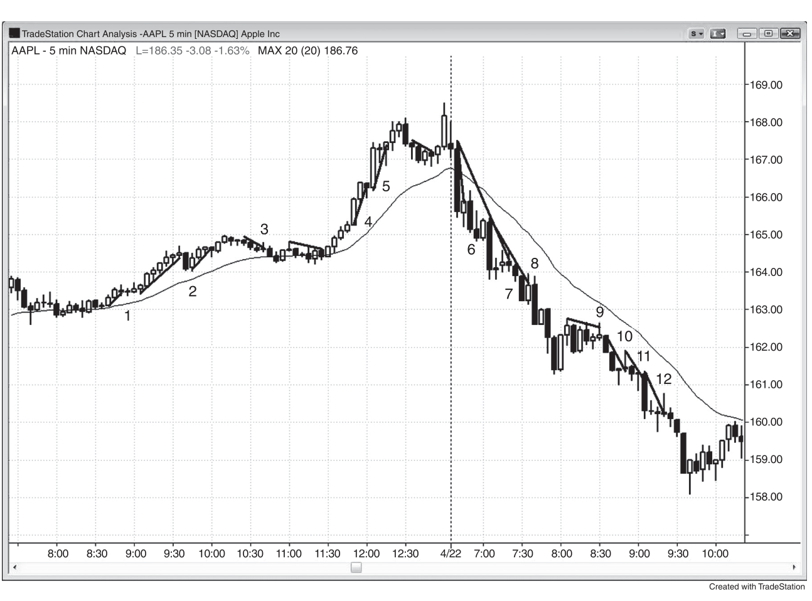
Small trend lines in strong trends, even when drawn using adjacent bars, often have failed breakouts that set up good with-trend entries. Many of these are two-legged pullback setups (ABC corrections) on 1 minute charts, but you don’t need to look at the 1 minute chart when you see the false breakouts on the 5 minute chart.
When trading, you do not have to actually draw the trend lines on the chart very often because most trends are visible without the help of the drawn lines.
There were many good with-trend entries in AAPL on this 5 minute chart in Figure 16.3 based on failed breakouts of micro trend lines. When the trend is steep, you should only be looking to trade with the trend and you should not be trading small reversals. For example, even though bar 3 broke above a bear micro trend line, the bear trend was actually a bull flag in a strong bull trend where the market has been above the moving average for more than 20 bars. You should only be looking to buy and not short, especially not just above the moving average.
Bar 2 was a breakout below a bull micro channel in a strong bull trend, and it should be expected to fail. This set up a reliable high 1 buy setup.
Bars 10 and 12 were first breakouts above steep, tight channels and therefore not good long entries. Although bar 12 was the second breakout to the upside on the way down, the move down from bar 10 lasted several bars and was steep; it therefore created a new small micro channel, and bar 12 was the first attempt to break out of the new channel (both bars 10 and 12 were low 1 sell signal bars).
Bar 9 was a bear reversal bar and a signal bar for the downside breakout of the small triangle. A triangle is a mostly sideways trading range with three or more pushes in one or both directions. The bar before bar 9 was the third of three small pushes down, and was the point at which the trading range became a triangle. Since the market was in such a tight bear channel from the first bar of the day, it was unreasonable to believe that the triangle would be a reliable buy setup. In fact, most traders did not see the pattern as a triangle yet, and were continuing to look for shorts. Once the bar 9 bear reversal bar formed the third push up, traders were confident that the pattern was a triangle in a bear trend, and a reliable sell setup. Even though bar 9 had a bull body, it was a small doji and therefore did not have much buying pressure. However, it was still a reversal bar since it closed below its midpoint. Bar 9 would have been a stronger signal if it had bear body.
The tight bear channel that ended three bars after bar 8 had several smaller micro channels within it. It does not matter whether a trader sees the tight channel as a large micro channel with a couple of small pullbacks, three consecutive micro channels, or as a large tight bear channel, because he would trade the market the same way. The move down is very strong and is probably a strong spike on a higher time frame chart. Smart traders were looking for any pullback to short, expecting that any pullback would simply be profit taking by the bears, and would be followed by lower prices and not a trend reversal. In a strong trend such as this, traders will short above the high of the prior bar and below the low of any pullback, like below bars 9, 10, and 12.
Many bull trends that have only small pullbacks but result in large profits have low probability short setups. For example, both bars 10 and 12 were doji bars in areas of other bars with tails, and therefore were signs of two-sided trading. When the market begins to develop signs of two-sided trading, it often is evolving into a trading range, which means shorting near its low and hoping for a breakout of the developing trading range is a low probability short. The probability of a successful swing down might be only 40 percent. However, since the reward is several times the risk, the trader’s equation is still very positive. Traders who prefer to take only high probability trades would not have shorted below bars 10 or 12, and instead would have waited for high probability reversals to buy (like the bull reversal bar after a series of sell climaxes at the low of the day; reversals are discussed in book 3), or pullbacks to short (like the bar 9 triangle), or strong bear spikes to short (like the bar 11 close, since it was a breakout below a wedge bottom; the low of the bar before bar 11 and the high of bar 12 formed a measuring gap, which is discussed in book 2).
Deeper Discussion of This Chart
In Figure 16.3, yesterday closed with a strong bull trend bar breakout of a largely horizontal bull flag after a protracted bull trend. This was a final flag short setup and it triggered on the first bar of today. Traders could short below the bull trend bar or below the first bar, which had a small bear body, or below the bottom of the final flag. The entry bar was a large bear spike and was followed by a tight and therefore very strong bear channel. The day was a trend from the open bear trend day.
The first reversal attempt of micro channels is due to profit taking. For example, when the bear bar before bar 2 fell broke below the bull micro channel, it was due mostly to bulls taking profits. Other bulls were eager to get long, since this was in a bull trend, and bought using limit orders as that bear trend bar fell below the low of the prior bar, and others bought one to several ticks below. Some bought on the close of the bear bar, expecting it to become a failed breakout. Limit order entries are discussed in book
2. Traders who prefer stop entries bought above the bar 2 two-bar reversal, which was a high 1 and a breakout pullback buy setup.
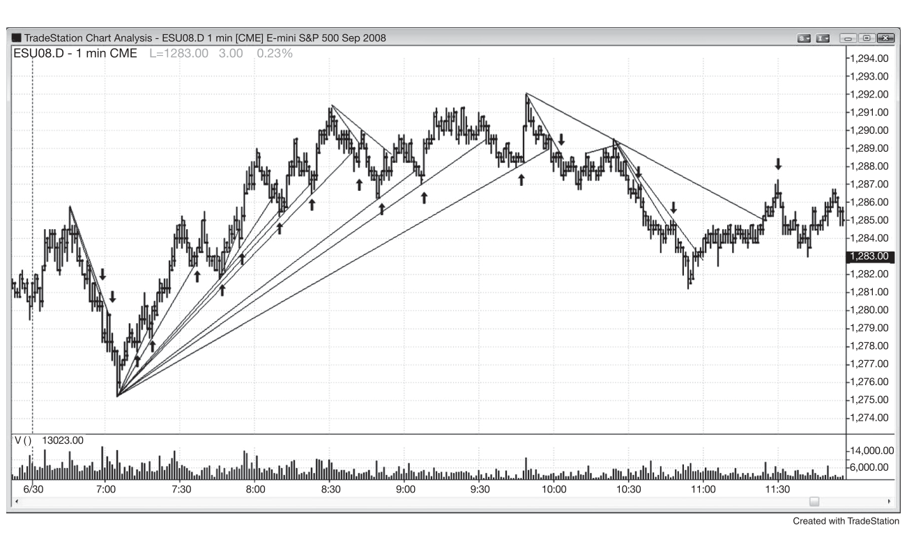
What appear as micro trend line setups on a 5 minute chart are usually 3- to 10-bar pullbacks on the 1 minute chart (see Figure 16.4). The 1 minute Emini provided entries on trend line tests and trend channel overshoots and reversals all day long. Many of the penetrations were less than one tick but still meaningful. The lines shown are just some of the ones that could be drawn on this chart; there are many others. Just because it looks easy when you look back at a 1 minute chart at the end of the day does not mean that it is easy to make money trading the chart in real time. It is not. Invariably the best setups look bad but set up and trigger too fast to take them, whereas the losers give you plenty of time to get in. The result is that you end up taking too many bad trades and not enough good ones to offset your losses and you lose money on the day.
Each successive trend line in Figure 16.4 gets shallower until trend lines in the other direction dominate the price action.
A micro channel is usually a trend bar (a spike) on some higher time frame chart, and a channel with many pullbacks on a smaller time frame chart.
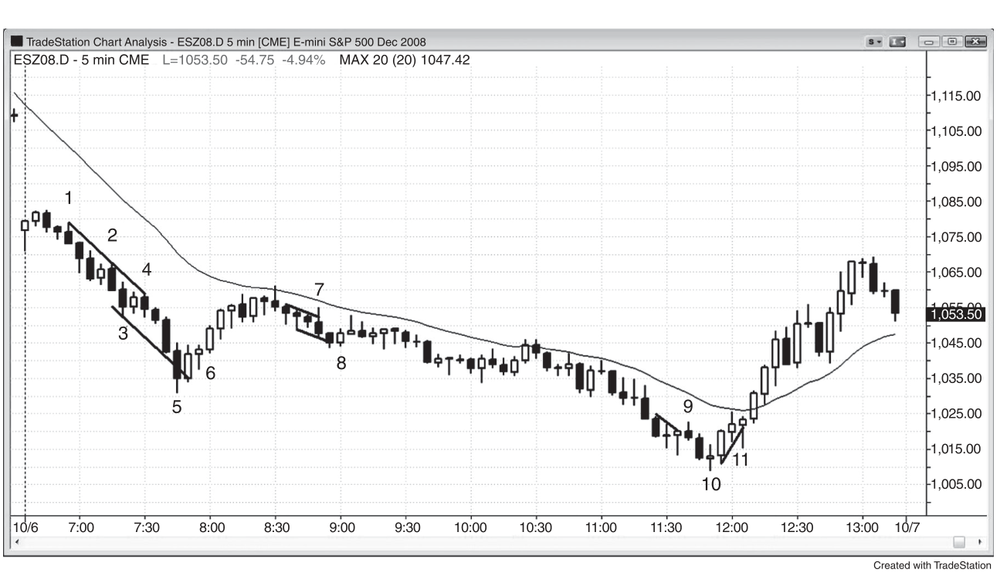
There were many micro trend line and channel trades in the Eminis on the day charted in Figure 16.5 (only four are shown), a very unusual day when the Dow was down over 700 points but rallied into the close to make back half of the loss.
Bar 5 was a micro trend channel overshoot that became the first bar of a twobar reversal. The channel line was a parallel of the bars 1 to 4 micro trend line. You could also have drawn the channel line using the lows (the low of the bar after bar 1 and the low of bar 3). There was a great ii setup where both bars had bull closes, which is always desirable when fading a strong bear trend. The bar after bar 5 formed a two-bar reversal with bar 5.
When a micro channel starts having five to 10 bars like the channel from the open that ended at bar 5, you can just as accurately simply refer to it as a channel. The term does not matter because a micro channel is simply a channel and the only reason to distinguish it from larger channels is because micro channels often set up reliable with-trend scalps in trends.
Bars 7 and 9 were micro trend line failed breakout short scalps and both were quickly followed by buy scalps as the failures failed, creating breakout pullback buy setups (even though both were lower lows). Bar 7 was the first breakout above the micro channel and therefore not a good long setup. Instead, it became an outside down entry for a short. You could also have waited for bar 7 to close to be sure that it had a bear body and then short the breakout below the bar 7 outside down bar for a scalp.
Bar 11 was a classic trap to get you out of a strong rally. If you exited, you needed to buy again on the high 1 above the bar 11 micro trend line false breakout. Bar 9 was a breakout above the bear micro channel, and bar 10 was a lower low breakout pullback, so traders were wondering if a larger rally was likely. Bar 10 had a small bear body and the next bar was a strong bull trend bar. The following bar also had a bull body. The buying pressure was building, and that made that third bull bar a weak low 1 sell setup. Traders expected it to fail and bought at and below its low. They did not know that a bull trend would follow, but believed that the market would rally enough for at least a long scalp. Within a bar or two after bar 11, traders saw the market as always-in long, and swung the remainder of their longs, and even added to them.
Many of the bars today had a range of over 6 to 8 points. It would be prudent to reduce your position size to half or less, and increase your stop to 4 points and your profit target to 2 points. Otherwise, it was just another well-behaved price action day.
Deeper Discussion of This Chart
The day opened with a large gap down in Figure 16.5, but the first bar was a strong bull reversal bar and therefore set up a trend from the open buy signal based on the failed breakout below the close of yesterday. The third bar was a strong bear bar and therefore a spike down, but the market might just be forming a higher low before the rally resumes. Instead, the market traded above the higher low and then reversed down in an outside bar down (bar 1), triggering a breakout pullback short entry. The gap down was the breakout, and the failed breakout and attempt to rally failed and became a breakout pullback for a resumption of the bear breakout. Traders reversed to short as the bar went outside down. Other traders shorted below the low of the outside down bar, and others shorted below the low of the bull reversal bar (the first bar of the day).
The day became a large trend from the open bear day as the market traded in a tight channel down to bar 5. The channel was so tight that it was effectively just a spike. The market pulled back to the moving average and then a bear channel unfolded down to the bar 10 low of the day.
Most failed micro trend line trades are low 1 entries in bear trends and high 1 entries in bull trends. Bar 9 was a low 1 sell setup. Bar 11 was a high 1 buy setup; it was the first higher low in the new bull leg, and a higher low after a possible trend reversal into a bull is a good buy setup. The low 1 signal bar before bar 11 was a doji bar and it followed two bull trend bars. The first was a strong bull trend bar that might have turned the always in direction to long (it was a two-bar reversal with the bar after bar 9, after the bar 9 one-bar final flag). Aggressive bulls would have bought with limit orders at the low of the low 1 signal bar, expecting the short to fail.
Breakout pullback trades that have higher highs or lower lows are small final flag reversals. For example, bar 9 was a breakout above a micro trend line, and the breakout failed and sold offto a lower low at bar 10. Bar 10 can be thought of as a pullback from the bar 9 breakout, and it pulled back to a lower low, which breakout pullbacks sometimes do. Since it reversed up, bar 9 became a one-bar-long final flag.
The sell-offdown to bar 5 was in a tight channel, but it was so strong that it had to be a spike down on a higher time frame chart. The market then rallied to the moving average, where there was a 20 gap bars sell signal. This was followed by a long channel down to bar 10, completing the bear spike and channel pattern. The first target of the reversal was the top of the first strong buy setup, which was the bar 5 two-bar reversal.
After that, the next target was the start of the bear channel, which was the moving average test at 8:30.
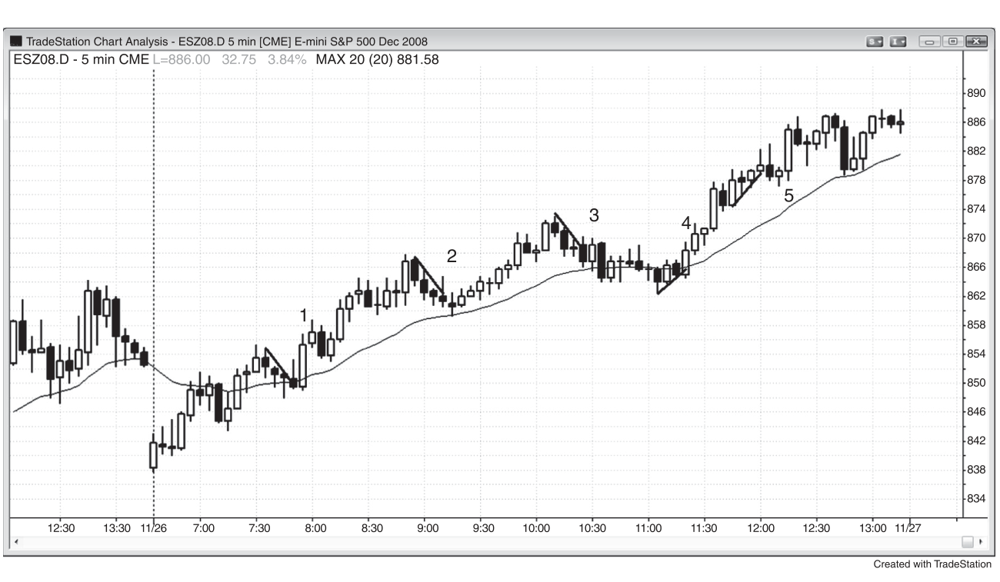
On a strong bull trend day, shorts should be avoided, including micro trend line shorts, especially near or above the moving average. In Figure 16.6, shorting on bars 1, 2, and 3 would have been selling against the bull trend in the area of the moving average or above the moving average. Yes, the downward-sloping micro trend line indicated that there was a small bear trend, but each occurred as part of a pullback in a very strong bull trend, and you should have been only looking to buy. These were bull flags and they were above the moving average, which is a sign of bull strength. There had been no break of a significant bull trend line followed by a reversal down from a higher high or lower high test of the bull high. The only value of bear micro trend lines on a bull trend day is to alert you to buy the breakout pullback that will form as the micro trend line short fails. In other words, don’t short on bars 1, 2, and 3, and instead go long where those shorts would have covered. The failure would form a small lower low (like after the bars 2 and 3 failed micro trend line breakouts) or a small higher low (like on the bar 1 failed breakout), and would just become a pullback in the bull breakout of the bear micro trend line (a breakout pullback long setup).
With-trend micro trend line entries are high-probability trades, like the longs at bars 4 and 5.
Deeper Discussion of This Chart
The chart in Figure 16.6 shows a trend from the open bull day, so shorts should be avoided, including micro trend line shorts, especially near or above the moving average.
The market broke out below the moving average but immediately reversed up in a failed breakout. The bears tried to turn the rally into a breakout pullback short at the moving average, but the rally had several strong bull bodies, which meant that traders should short only on a second entry. There was none. The sell-offwas brief and became a higher low.
Horizontal Lines: Swing Points and Other Key Price Levels
Most days are trading range days or have a lot of trading range activity. On these days you will find that horizontal lines across swing highs and lows often serve as barriers that result in failed breakouts and then reversals. Expect swing high breakouts to fail and form higher high reversal setups, and swing low breakouts to fail and form lower low reversal setups. Sometimes the failure fails, which is a breakout pullback setup, and the market makes a second more extreme higher high or lower low. A fade of a second higher high or lower low setup is even more likely to be successful, because they are second attempts to reverse the market and second signals are good setups on trading range days.
On trend days, horizontal lines should generally be used only to enter on pullbacks. For example, if there is a strong upside breakout of a trading range on a bull trend day, there might be a pullback to the area of breakout level after a few bars. If there is a bull reversal setup on the test, this is a good breakout pullback buy setup.
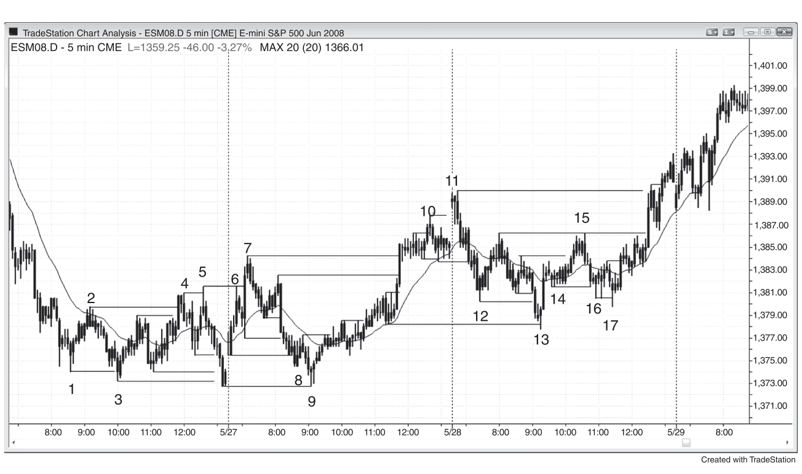
Most days are not strong trend days, and on these days traders should be looking at all prior swing highs and lows to see if the market creates failed breakouts, which can lead to reversal entries. Second signals are the best. A second higher high or lower low is a more extreme point on a trading range day where the middle of the day acts like a magnet, and this further extreme is therefore more likely to yield a scalper’s profit. For example, in Figure 17.1, bar 5 was a second higher high over bar 2.
Bar 9 was a second attempt to reverse up after falling below the low of the open, and a double bottom with the low of the day before.
Deeper Discussion of This Chart
Bar 5 was also the third push up from the bar 3 low in Figure 17.1. Even though it did not have a wedge shape, three push patterns usually behave like wedges and can be considered to be variations of wedges.
Bar 9 was the seventh point of an expanding triangle bottom (even though it was a double bottom with yesterday’s low and not a lower low, close is close enough) and bar
11 was an expanding triangle top. It was also a smaller expanding triangle where bar 10 was the second push up and it was about five bars after the first.
Bar 13 was a large double bottom pullback. There were multiple bottoms to choose from for labeling the double bottom, and bars 3 and 9 might have been the best. It was also a high 2 buy setup since it was at the bottom of two large, complex legs down. Since bars 9 to 11 formed a bull channel, which is a bear flag, bar 13 was a failed breakout of that bear flag. It was also a large wedge bull flag where the small swing low before or after bar 10 was the first push down and bar 12 was the second.
Bar 15 was a double top bear flag. It failed as a large bull breakout bar went above its high, and the market became noticeably more bullish.
Bar 17 was a second lower low below bar 14 and a lower low below bar 16. It was also a wedge bull flag with bars 14 and 16, and a breakout pullback to a higher low following the breakout above the bull flag of bars 11 to 13.
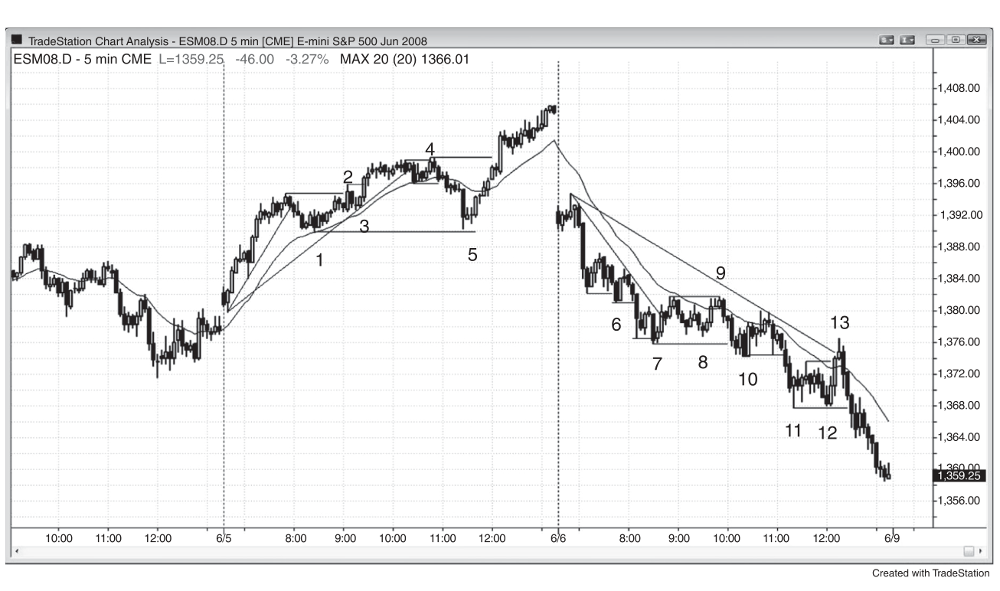
On strong trend days, consider fading swing highs in bull trends and swing lows in bear trends only if there was first a good trend line break and a strong reversal bar. In Figure 17.2, both days were strong trend days with one extreme near the open and then no moving average pullback for over two hours (20 gap bar pullback setups). Bar 4 was a bear reversal bar and a reversal down from the breakout above a trading range following a small reversal up from a breakout below. Also, bar 8 was the first bar of a small two-bar reversal and there was a higher low above bar 7. However, since these are countertrend and there was only minimal countertrend momentum on the trend line breaks, these trades are not strong and should only be scalps. Do not take them if they are distracting you from the with-trend entries, where you should swing much of your position.
Deeper Discussion of This Chart
In Figure 17.2, today opened with a breakout below the bull channel of the final hour of yesterday. A bull channel should always be thought of as a bear flag. The first bar had a bear body, indicating strength by the bears on the open; but the next bar reversed up in an attempt to form a failed breakout and a trend from the open bull day. Instead, the failed breakout failed and led to a breakout pullback short below the fourth bar and again below the low of the opening range. There was a strong two-bar bear spike followed by a protracted bear channel.
Bars 1 and 5 formed a double bottom bull flag, and bar 9 was part of a double top bear flag. Bar 8 was another small double bottom bull flag. Remember, a double bottom bull flag is often just a higher low that is a double bottom.
Bar 4 was a possible top of a channel in a spike and channel bull day, and the market tested down to the bar 1 beginning of the channel. This set up a double bottom bull flag buy setup.
Both bars 5 and 13 were moving average gap bar setups. They were after 11:30 a.m., when there is often a strong countertrend move that traps traders out of the trend and into the wrong direction. This sets up a reliable with-trend trade that usually results in a new extreme and often lasts into the close.
Trends
A trend is a series of price changes that are mostly either up (a bull trend or a bull) or down (a bear trend or a bear). This is very important when it comes to trading because a trader usually should not be looking to buy unless the market is at least forming a higher low and should not be looking to short unless the market is at least forming a lower high. A trend can be as short as a single bar (remember, a trend bar is made up of a trend on a smaller time frame) or longer than all of the bars on your screen. Trends can be loosely classified into four overlapping and often interchangeable categories: trend, swing, pullback, and leg. The distinctions are just guidelines because each of the three smaller versions is a different version on different time frames. For example, a pullback in a bull trend on a 60 minute chart might be a strong bear trend on a 1 minute chart. Also, each category will contain one or more of the smaller versions. A trend might be made of 10 swings, each containing one to four pullbacks, and each pullback might have one to four legs. Every upswing and downswing of any size is commonly referred to as a leg, so the distinctions are not very important, but each term carries a subtle distinction with it.
At its simplest, a trend is present when the chart on your computer screen starts at one of the two left-hand corners and ends at the diagonally opposite corner of the screen without huge fluctuations in between. For example, if the bars on the left are near the lower left-hand corner of your monitor and the bars on the right are near the upper right-hand corner and there are not many large upswings and downswings in the middle of your screen, then this is a bull trend. Your personal radar can tell you if the market is more likely in a trend instead of in a strong leg within a trading range. If you have a sense of uncertainty, the market is more likely in a trading range. If instead you have a sense of urgency and you are hoping for a pullback, then the market is more likely in a trend.
Trends can be very steep, with a series of trend bars with large bodies, very little overlap between adjacent bars, and small tails. This is the spike phase of a trend, and it can be as brief as a single bar. It is when the market becomes clearly always-in long in the eyes of most traders if the trend is a new bull trend, or alwaysin short in the case of a new bear trend. The market eventually begins to have some two-sided trading in the form of pullbacks, and the trend then transitions into the channel phase, which can last far longer than most traders expect is possible. Trends can have small spikes with big or small channels, or big spikes with big or small channels. The spikes can have some overlap between the bars and look more like a tight channel, and the channels can be steep with very little overlap between adjacent bars and look more like a large spike. The key point is that most trends tend to be very strong when starting out and then lose momentum as they mature, and the market eventually has larger pullbacks and evolves into a trading range. The trading range is simply a pullback on a higher time frame chart. At some point, the market breaks out into a spike in the opposite direction, and then the market reverses into a trend in the other direction.
A chart only shows one or two trends. If more than two trends are present on a chart, it is preferable to describe the trends by using one of the other three classifications because the two-sided action creates different trading opportunities. Both swings and legs are smaller trends, and there are at least two on the chart. The term swing is used when there are two or more smaller trends on the chart, even though the overall chart might be sideways.
A leg is any smaller trend that is part of a larger trend; it can be a pullback (a countertrend move), a swing in a trend or in a sideways market, or a with-trend move that occurs between any two pullbacks within a trend.
A pullback is a temporary countertrend move and is part of a trend, swing, or leg. For example, a bull pullback is a sideways to downward move in a bull trend, swing, or leg that will be followed by at least a test of the prior high. Any bar or series of bars that represents any pause or loss of momentum is a pullback, even if there is no actual backward movement. This includes a single inside bar, which obviously does not extend below the low or above the high of the prior bar. When it is a single bar, the bar is a pause bar or a pullback bar. These one-bar pullbacks are made up of a series of small swings on a smaller time frame chart. However, you might have to go all the way down to a 1 minute chart or a 100 tick or smaller chart to see them. This is a waste of time for a trader, but it is helpful to be aware of the reality because it provides a rationale for considering placing a trade.
Within any trend, there are a number of smaller opposite trends, some lasting for only one or two bars. All of them should be considered as likely to fail and therefore setups for trades in the direction of the larger trend. In a bull trend, the swings should be trending upward, meaning that each pullback should be above the prior pullback and result in a new high (trending highs and lows, or trending swings). All moves with strong momentum usually have at least a test of the extreme following a pullback (all strong moves usually have at least two legs, even if the second one falls short and reverses).
All trends, no matter how small, must first break a trend line from the prior trend or a support or resistance line from a prior trading range, and then have trending swings (e.g., a series of higher highs and lows in a bull trend). Absent either of these, there is no trend. The best risk/reward ratio occurs when you enter on the first pullback after a trend line break, before there is a clearly established trend. As a possible trend day is unfolding, traders should look for signs of strength, each of which increases the odds that the trend will continue.
Why is it important to recognize the existence of a trend? Because then most of your trades should be in that direction and you must try to take every with-trend entry and rarely take countertrend entries. Depending on how you define a trend and a reversal attempt, about 80 percent of attempts to reverse a trend will fail. Markets have inertia and tend to continue what they have just been doing. Because of this inertia, it makes far more mathematical sense to wait for the reversal attempt to fail and become simply a pullback in the trend and then enter in the direction of the trend. Incidentally, market inertia also means that if a market is in a trading range, it will resist breaking into a trend and about 80 percent of breakout attempts will fail.
The earlier you see the trend, the more money you stand to make. Focusing on the countertrend setups will likely make you miss the much more profitable but often scarier with-trend entries. The with-trend entries are scary because the market always looks overdone and it’s hard to imagine that selling near the low of an overdone bear or buying near the high of an overdone bull could ever be profitable. However, that is exactly why it is! For example, in a bear trend, no one is sure if there is going to be a bounce where they can sell at a better price but everyone is sure that the market will be even lower very soon. Because of this, everyone is selling at the market or on tiny pullbacks, and larger pullbacks just don’t materialize. The longs need to get out at any price and the bears want to get in at any price, because both believe the market is heading lower and they don’t want to risk missing it while they wait or hope for a bounce.
When a trend is especially strong, there is usually follow-through over the next one or more days. For example, if today was a huge bull trend day, especially if it was a reversal or a breakout and a possible start of a big move, the day will usually close near its high and the next day will also usually have a close above its open. This may continue for several days in a row. The opens often have sharp sell-offs that trap bulls out and bears in but usually find support at the 15 or 60 minute moving average or at some other support level (these are discussed in the section on support and resistance in book 2).
A trend is an area of relative certainty, where the odds are greater than 50–50 that the market will move X ticks further before it moves X ticks in the opposite direction. A trend is a series of spikes alternating with small trading ranges, and during each brief spike phase, the odds are better than 50–50, but in each trading range phase, uncertainty increases and the odds hover around 50–50 again. One of the difficulties in trading a trend is that the spike phases are often brief, and by the time you realize that one exists, there may not be enough ticks left with those increased odds to make a profit. Before you know it, a trading range forms and the odds are back to 50–50. One of the best ways to trade a trend is to anticipate when the next spike will begin and to enter on a stop as it is starting. That way, you can catch a spike with maybe a 60 percent probability or even higher of making X ticks before losing X ticks, and if you become proficient at this, you will be a successful trader.
Big traders don’t hesitate to enter a trend during its spike phase, because they expect significant follow-through, even if there is a pullback immediately after their entry. If a pullback occurs, they increase the size of their position. For example, if there is a strong bull breakout lasting several bars, more and more institutions become convinced that the market has become always-in long with each new higher tick, and as they become convinced that the market will go higher, they start buying. This makes the spike grow very quickly. They have many ways to enter, like buying at the market, buying a one- or two-tick pullback, buying above the prior bar on a stop, or buying on a breakout above a prior swing high. It does not matter how they get in, because their focus is to get at least a small position on, and then look to buy more as the market moves higher, or if it pulls back. Because they will add on as the market goes higher, the spike can extend for many bars. A beginning trader sees the growing spike and wonders how anyone could be buying at the top of such a huge move. What they don’t understand is that the institutions are so confident that the market will soon be higher that they will buy all the way up, because they don’t want to miss the move while waiting for a pullback to form. The beginner is also afraid that his stop would have to be below the bottom of the spike, or at least below its midpoint, which is far away. The institutions know this, and simply adjust their position size down to a level where their dollars at risk are the same as for any other trade.
In every trend, no matter how strong, the market eventually pulls back a little. For example, if there is a strong bull breakout, or a trend from the open bull, where there is a bull spike made of four consecutive large bull trend bars with small tails, and then the fifth bar falls below the low of the prior bar, this is a pullback. If everyone is looking to buy a pullback, why would one ever develop? It is because not everyone is looking to buy. Experienced traders who bought early on look for price levels to take partial profits (they will begin to scale out of their longs), and sometimes they will sell out of their entire positions. These are not the bulls who are looking to buy a few ticks lower on the first pullback. The traders who are taking partial or full profits are afraid of a reversal, or of a deeper pullback, which would allow them to buy again many ticks lower. If they believed that the pullback was only going to last for a few ticks, and then the bull was going to resume, they never would have exited. They always take their profits at some resistance level, like a measured move target, a trend line, a trend channel line, or at the bottom of a trading range above the market. Most of the trading is done by computers, so everything has a mathematical basis, which means that the profit-taking targets are based on the prices that anyone can see on their screens. With practice, traders can learn to spot areas where the computers might take profits, and they can take their profits at the same prices, expecting a pullback to follow.
Sometimes the spike will have a bar or a pattern that will allow aggressive bears to take a small scalp, if they think that the pullback is imminent and that there is enough room for a profitable short. However, most traders who attempt this will lose, because most of the pullbacks do not fall far enough for a profit, or the trader’s equation is weak (the probability of making their scalp times the size of the profit is smaller than the probability of losing times the size of their protective stop). Also, traders who take the short are hoping so much for their small profit that they invariably end up missing the much more profitable long that forms a few minutes later.
Some traders don’t like to buy spikes because they don’t like to risk too much. They prefer to feel like they are buying at a better price (a discount). These value bulls will only buy pullbacks and will wait for one to form. Other bulls who missed the initial buy or did not buy enough during the spike eagerly wait for the first pullback to buy or to add to their positions. They place limit orders at and below the low of the prior bar, hoping for a small dip, so that they can get long. Because of this, the first pullback usually only falls below the low of the prior bar by a few ticks. When the bulls are particularly aggressive, they will buy above the low of the prior bar, and what appeared to be a bar that would become a pullback bar might instead not fall below the low of the prior bar.
If the bulls holding profitable longs think that the bull spike is weakening and that the next bar will trade below the low of the current bar, some will sell out of their longs at the market. Others will wait for the bar to close, and if the bar is not another strong bull trend bar, they will sell at the close of the bar, realizing that they might be selling too early, but happy with being able to sell at a high price. Eventually, there will be a true pullback bar, with a low below the low of the prior bar. Once there is, other bulls will place stop orders to buy above its high, because this bar is a high 1 buy setup in a strong bull spike and therefore a high probability buy setup. Some traders prefer to buy on stops above bars and not limit orders below bars because they want the market going in their direction when they enter, so that they will have the wind at their backs instead of in their faces. They are willing to exchange some of their potential profits for a higher probability of success. Both approaches are reasonable, if the trader’s equation is favorable for their trades. Bull trends on higher time frame charts tend to have rallies in the final 30 to 60 minutes of trading on the 5 minute chart. Some of the buying is from mutual funds and some is from short covering, but much of it is simply statistically based program trading where the programmers have testing that shows that buying into the close in a bull trend is a profitable strategy. The strong finish often pushes the close above the open of the day. The result is a bull trend bar on the daily chart. When the market is in a bull trend, look for buy setups in the final hour. Likewise, when the daily chart is in a bear trend, look for sell setups in the final hour, as the 5 minute chart will often sell off into the close, causing the bar on the daily chart to be a bear trend bar.
The most recent bars are at the top of your computer screen in a bull trend and at the bottom in a bear trend, and psychologically there does not appear to be any more room for the market to go further. The result is that many traders won’t take a great buy signal at the top of a bull trend or sell signal at the bottom of a bear trend and will instead look for reversals. But that computer screen illusion has nothing to do with the market and if you can add space above or below the chart, there suddenly will be lots of room for the trend to run. The market draws in countertrend traders, and if you enter in the direction of the trend exactly where they exit at a loss, they will drive the market in your direction, even though the market looks so overextended.
A move above a prior swing high in a bull trend will lead to predominantly one of three outcomes: more buying, profit taking (by far the most common possibility), or shorting. When the trend is strong, strong bulls will buy the breakout above the old high (they are “pressing,” or adding to, their longs) and there will be a measured move up of some kind. For example, if a bull trend forms a wedge top, but then breaks above the top of the wedge, if enough bulls are pressing their long, the market will often go up for a measured move that is equal to the height of the wedge. The bears will quickly see how strong the breakout is and will buy back their shorts. This urgent short covering adds fuel to the breakout and contributes to the size of the bull spike. The strong bears who were shorting during the wedge top will now see that their premise is wrong. They will expect about a measured move up and will quickly buy back their losing shorts and not consider shorting again for several bars and probably not until the market tests some resistance area, like the measured move target. This often leads to a strong bull breakout lasting one or more bars, with follow-through over the next several bars. If the move up is very strong, the bears might not look to sell again for dozens of bars and possibly even for the rest of the day.
Whenever the market goes up far enough above the breakout to enable a trader to make at least a profitable scalp before there is a pullback, then assume that there was mostly new buying at the high. If it goes sideways, assume that there was profit taking and that the bulls are looking to buy again a little lower. If the market reverses down hard, assume that the strong bears dominated at the new high and that the market will likely trade down for at least a couple of legs and at least 10 bars.
In the absence of some rare, dramatic news event, traders don’t suddenly switch from extremely bullish to extremely bearish. There is a gradual transition. A trader becomes less bullish, then neutral, and then bearish. Once enough traders make this transition, the market reverses into a deeper correction or into a bear trend. Every firm has its own measure of excess, and at some point enough firms decide that the trend has gone too far. They believe that there is little risk of missing a great move up if they stop buying above the old high, and they will buy only on pullbacks. If the market hesitates above the old high, the market is becoming two-sided, and the strong bulls are using the new high to take profits.
Profit taking means that traders are still bullish and are looking to buy a pullback. Most new highs are followed by profit taking. Every new high is a potential top, but most reversal attempts fail and become the beginnings of bull flags, only to be followed by another new high. If a rally to test the high has several small pullbacks within the leg up, with lots of overlapping bars, several bear bodies, and big tails on the tops of the bars, and most of the bull trend bars are weak, then the market is becoming increasingly two-sided. The bulls are taking profits at the tops of the bars and buying only at the bottoms of the bars, and the bears are beginning to short at the tops of the bars. Similarly, the bulls are taking profits as the market approaches the top of the bull trend, and the bears are shorting more. If the market goes above the bull high, it is likely that the profit taking and shorting will be even stronger.
Most traders do not like to reverse, so if they are anticipating a reversal signal, they prefer to exit their longs and then wait for that signal. The loss of these bulls on the final leg up in the trend contributes to the weakness of the rally to the final high. If there is a strong reversal down after the market breaks above the prior high, the strong bears are taking control of the market, at least for the near term. Once that happens, then the bulls who were hoping to buy a small pullback believe instead that the market will fall further. They therefore wait to buy until there is a much larger pullback, and their absence of buying allows the bears to drive the market down into a deeper correction, lasting 10 or more bars and often having two or more legs.
There is one situation where the breakout in a bull trend is routinely met by aggressive shorts who will usually take over the market. A pullback is a minor trend in the opposite direction, and traders expect it to end soon and for the larger trend to resume. When there is a pullback in a strong bear trend, the market will often have two legs up in the minor bull trend. As the market goes above the high of the first leg up, it is breaking out above a prior swing high in a minor bull trend. However, since most traders will see the move up as a pullback that will end very soon, the dominant traders on the breakout will usually be aggressive sellers, instead of aggressive new buyers or profit-taking longs, and the minor bull trend will usually reverse back down into the direction of the major bear trend after breaking out above the first or second swing high in the pullback.
The same is true of new lows in a bear trend. When the bear trend is strong, strong bears will press their shorts by adding to their positions on the breakout to a new low and the market will continue to fall until it reaches some measured move target. As the trend weakens, the price action at a new low will be less clear, which means that the strong bears are using the new low as an area to take profits on their shorts rather than as an area to add to their shorts. As the bear trend further loses strength, eventually the strong bulls will see a new low as a great price to initiate longs and they will be able to create a reversal pattern and then a significant rally.
As a trend matures, it usually transitions into a trading range, but the first trading ranges that form are usually followed by a continuation of the trend. How do the strong bulls and bears act as a trend matures? In a bull trend, when the trend is strong, the pullbacks are small because the strong bulls want to buy more on a pullback. Since they suspect that there may not be a pullback until the market is much higher, they begin to buy in pieces, but relentlessly. They look for any reason to buy, and with so many big traders in the market, there will be some buying for every imaginable reason. They place limit orders to buy a few ticks down and other limit orders to buy a few ticks above the low of the prior bar, at the low of the prior bar, and below the low of the prior bar. They place stop orders to buy above the high of the prior bar and on a breakout above any prior swing high. They also buy on the close of both any bull or bear trend bar. They see the bear trend bar as a brief opportunity to buy at a better price and the bull trend bar as a sign that the market is about to move up quickly.
The strong bears are smart and they see what is going on. Since they believe, just like the strong bulls, that the market is going to be higher before long, it does not make sense for them to be shorting. They just step aside and wait until they can sell higher. How much higher? Each institution has its own measure of excess, but once the market gets to a price level where enough bear firms believe that it might not go any higher, they will begin to short. If enough of them short around the same price level, more and larger bear trend bars form and bars start to get tails on the tops. These are signs of selling pressure and they tell all traders that the bulls are becoming weaker and the bears are becoming stronger. The strong bulls eventually stop buying above the last swing high and instead begin to take profits as the market goes to a new high. They are still bullish but are becoming selective and will buy only on pullbacks. As the two-sided trading increases and the sell-offs have more bear trend bars and last for more bars, the strong bulls will want to buy only at the bottom of the developing trading range and will look to take profits at the top. The strong bears begin to short at new highs and they are now willing to scale in higher. They might take partial profits near the bottom of the developing trading range if they think that the market might reverse back up and break out to a new high, but they will keep looking to short new highs. At some point, the market becomes a 50–50 market and neither the bulls nor bears are in control; eventually the bears become dominant, a bear trend begins, and the opposite process unfolds.
A trend that has gone on for 30 or more bars will often have an unusually strong breakout, but it can be an exhaustive climax. For example, in a protracted bull trend, all strong bulls and bears love to see a large bull trend bar or two, especially if it is exceptionally large, because they expect it to be a brief, unusually great opportunity. Once the market is close to where the strong bulls and bears want to sell, like near a measured move target or a trend channel line, especially if the move is the second or third consecutive buy climax, they step aside. The absence of selling by the strongest traders results in a vacuum above the market, which creates one or two relatively large bull trend bars. This bull spike is just the sign that the strong traders have been waiting for, and once it is there, they appear as if out of nowhere and begin their selling. The bulls take profits on their longs and the bears initiate new shorts. Both sell aggressively at the close of the bar, above its high, at the close of the next bar (especially if it is a weaker bar), and at the close of the following bar, especially if the bars are starting to have bear bodies. They also sell below the low of the prior bar. When they see a strong bear trend bar, they sell at its close and below its low. Both the bulls and the bears expect a larger correction, and the bulls will not consider buying again until at least a 10-bar, two-legged correction, and even then, only if the sell-off looks weak. The bears expect the same sell-off and will not be eager to take profits too early.
Weak traders see that large bull trend bar in the opposite way. The weak bulls, who had been sitting on the sidelines hoping for an easy pullback to buy, see the market running away from them and want to make sure they catch this next leg up, especially since the bar is so strong and the day is almost over. The weak bears, who shorted early and maybe scaled in, were terrified by the rapidity with which the bar broke to a new high. They are afraid of relentless follow-through buying, so they buy back their shorts. These weak traders are trading on emotion and are competing against computers, which do not have emotion as one of the variables in their algorithms. Since the computers control the market, the emotions of the weak traders doom them to big losses on big bull trend bars at the end of an overdone bull trend.
Once a strong bull begins to have pullbacks that are relatively large, the pullbacks, which are always small trading ranges, behave more like trading ranges than bull flags. The direction of the breakout becomes less certain and traders begin to think that a downside breakout is about as likely as an upside breakout. A new high is now a breakout attempt above a trading range, and the odds are that it will fail. Likewise, once a strong bear trend begins to have relatively large pullbacks, those pullbacks behave more like trading ranges than bear flags, and therefore a new low is an attempt to break below a trading range and the odds are that it will fail.
Every trading range is within either a bull trend or a bear trend. Once the twosided trading is strong enough to create the trading range, the trend is no longer strong, at least while the trading range is in effect. There will always be a breakout from the range eventually, and if it is to the upside and it is very strong, the market is in a strong bull trend. If it is to the downside and strong, the market is in a strong bear trend.
Once the bears are strong enough to push a pullback well below the bull trend line and the moving average, they are confident enough that the market will likely not go much higher and they will aggressively short above the old high. At this point, the bulls will have decided that they should buy only a deep pullback. A new mind-set is now dominant at the new high. It is no longer a place to buy, because it no longer represents much strength. Yes, there is profit taking by the bulls, but most big traders now look at the new high as a great opportunity to initiate shorts. The market has reached the tipping point and most traders have stopped looking to buy small pullbacks and instead are looking to sell rallies. The bears are dominant and the strong selling will likely lead to a large correction or even a trend reversal. After the next strong push down, the bears will look for a lower high to sell again or to add to their short positions, and the bulls who bought the pullback will become concerned that the trend might have reversed or at least that there will be a much larger pullback. Instead of hoping for a new bull high to take profits on their longs, they will now take profits at a lower high and not look to buy again until after a larger correction.
There will still be bulls who bought much lower and want to give the bull trend every possible chance to resume. Traders know that most reversal attempts fail, and many who rode the trend up will not exit their longs until after the bears have demonstrated the ability to push the market down hard. Many longs bought puts to protect themselves in case of a severe reversal. The puts allow them to hold on to give the bull trend every possible chance to resume. They know that the puts limit their losses, no matter how far the market might fall, but once they see this impressive selling pressure, they will then look for a rally to finally exit their longs, and as that rally begins, they will take profits on their puts. Also, most of their puts expire within a few months, and once expired, the traders no longer have downside protection. This means that they cannot continue to hold on to their positions unless they keep buying more and more puts. If they believe that the market will likely fall further and not rally again for many months, it does not make sense to continue to pay for ongoing put protection. Instead, they will look to sell out of their positions. Their supply will limit the rally, and their selling, added to the shorting by aggressive bears and the profit taking by bulls who saw the sell-off as a buying opportunity, will create a second leg down.
These persistent bulls will each have a price level on the downside that, if reached, will make them want to exit on the next rally. As the market keeps working lower, more and more of these bulls will decide that the bull trend will not resume anytime soon and that the trend might have reversed into a bear trend. These remaining die-hard longs will wait patiently for a pullback in the bear swing to exit their longs, and their positions represent a supply that is overhanging the market. They sell below the most recent swing high because they doubt that the market will be able to get above a prior swing high, and are happy to get out at any price above the most recent low. Bears will also look for a pullback from each new low to add to their shorts and place new shorts. The result is a series of lower highs and lows, which is the definition of a bear trend.
If the market enters a bear trend, the process will reverse. When the bear trend is strong, traders will short below prior lows. As the trend weakens, the bears will take profits at new lows and the market will likely enter a trading range. After a strong rally above the bull trend line and the moving average, the bears will take profits at a new low and strong bulls will aggressively buy and try to take control of the market. The result will be a larger bear rally or possibly a reversal into a bull trend.
A similar situation occurs when there is a pullback that is large enough to make traders wonder if the trend has reversed. For example, if there is a deep, sharp pullback in a bull trend, traders will begin to look at moves below prior swing lows, but this is in the context of a pullback in a bull trend instead of as part of a bear trend. They will watch what happens as the market falls below a prior swing low. Will the market fall far enough for bears, who entered on a sell stop below that swing low, to make a profit? Did the new low find more sellers than buyers? If it did, that is a sign that the bears are strong and that the pullback will probably go further. The trend might even have reversed to down.
Another possibility on the breakout to a new low is that the market enters a trading range, which is evidence that the shorts took profits and that there was unimpressive buying by the bulls. The final alternative is that the market reverses up after the breakout to a new low. This means that there were strong bulls below that swing low just waiting for the market to test there. This is a sign that the sell-off is more likely just a big pullback in an ongoing bull trend. The shorts from higher up took profits on the breakout to the new low because they believed that the trend was still upward. The strong bulls bought aggressively because they believed that the market would not fall further and that it would rally to test the bull high.
Whenever there is any breakout below a swing low, traders will watch carefully for evidence that the bulls have returned or that the bears have taken control. They need to decide what influence is greatest at the new low, and they use the market’s behavior to make that decision. If there is a strong breakout, then new selling is dominant. If the market’s movement is uncertain, then profit taking by the shorts and weak buying by the bulls is taking place, and the market will likely enter a trading range. If there is a strong reversal up, then aggressive buying by the longs is the most important factor.
This part of the book describes many common trend patterns that you should look for every day. Although a trend can begin with any bar during the day, the majority of trend days begin within the first hour or so. If you see a trend pattern setting up within the first hour or two of the day, there will likely be several highprobability with-trend trades that you can then make. You need to decide many times every day if the day resembles any of the types of trends described later in this chapter, and if it does, force yourself to take the with-trend trades.
However, if none of these patterns is present, the day is a trading range day and you need to look for opportunities to fade new extremes. Also, if the market makes a run for a couple of hours and the day appears to be a trading range day, be aware that the opposite extreme might get taken out over the course of the next couple of hours, so do not be too eager to take profits on the swing portion of your reversal trade. The odds are very high that the reversal will at least test the midpoint of the day’s range.
After a substantial decline in a bear market on the daily chart, people begin to become very concerned about the money that they’ve lost and they do not want to lose any more money. This makes them sell, regardless of the fundamentals. There was an added problem in the bear market of 2008. Baby boomers were on the verge of retiring and were shocked by what they saw as comfortable nest eggs quickly falling 40 percent in value. So what will they do? They will continue to sell every rally as they try to preserve what they have left. Also, all that money that they are taking out of the market will never return to lift prices again. They will take their money at all the “Thank you, God” points along the way. This will be just below the prior swing high, where they exit and promise God that they will never buy again in return for Him letting them recoup some of their losses. This creates a series of lower highs and lows until the last bear has sold. Once that happens, the market will then be able to rally above the prior swing highs.
The result of people selling regardless of fundamentals is that the market often falls in huge bear trend days, dropping much further than what the fundamentals warrant, and often there is a huge plunge in the final 30 minutes as funds are forced to sell because of redemption orders. There will be vicious rallies along the way as people become convinced that the bottom is in and they panic to get back long. Also, because the trend is so clearly down, there will be many who are short. They may cover aggressively on any reversal, resulting in huge bull trend bars on the daily chart, even though it is still a bear market. The end result is a collection of very large range days once the bear trend is well underway. The huge ranges offer great price action day trading opportunities but you might have to increase your stop size and therefore reduce your position size. While many people following the daily charts are selling at the low and buying at the high of each trap (every strong short covering rally), trading off emotion more than reason, a good price action trader can do very well just looking for standard price action setups.
This kind of mentality is not restricted to unsophisticated investors. In the fall of 2008, most hedge funds were down on the year and their sophisticated investors aggressively pulled their money out as the market continued to sell off. The hedge funds had to continue to liquidate on every small rally to meet redemptions and anticipated redemptions. This continued to drive the market down, independent of fundamentals, and just like with less sophisticated investors, the selling will continue until all that’s left are positions that investors will hold until they fall to zero.
Also, for many hedge fund managers a big part of their income is incentive based. For example, every quarter that the fund closes at a new high, they might take 20 percent of that profit above the old equity high. If the fund instead is down 30 percent on the year, it will need to earn about 50 percent to get up to that incentive level again. Rather than working for free for several years, it might make more sense to close the fund and start over with a new fund. However, when they close the fund, they have to liquidate and since there is no incentive for them, they can liquidate at any price, no matter how low. This adds to selling that is independent of the intrinsic value of stocks. If they had a $1 billion fund, their new fund is starting from scratch and it will take a few years before they have enough equity and own as much stock as they did in the old fund, so buying by the new funds doesn’t immediately lift the market.
When the volatility reaches an extremely high level, the end of the bear trend is often near as traders give up responding to the whipsaws and decide that there is nothing left that they will sell at any price. When there are no more sellers and the market is overdone on the basis of fundamentals, a good rally should follow. And just how far can a big-name stock fall in a bear market? Much farther than you might think, even for the bluest of the blue chips. Cisco (CSCO) lost 90 percent of its value in three years after the tech wreck of 2000, and Apple (AAPL) lost 95 percent of its value during the six years starting in 1991. General Motors (GM) lost 90 percent in the seven years after 2001. So don’t be eager to buy just because a stock is down a Fibonacci 38 percent, 50 percent, or even 62 percent. Wait until there is a price action setup, and it must include a prior break of the bear trend line.